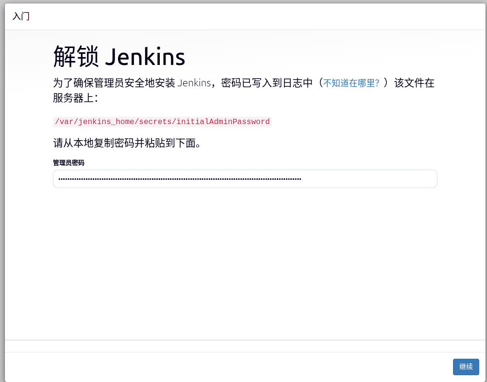
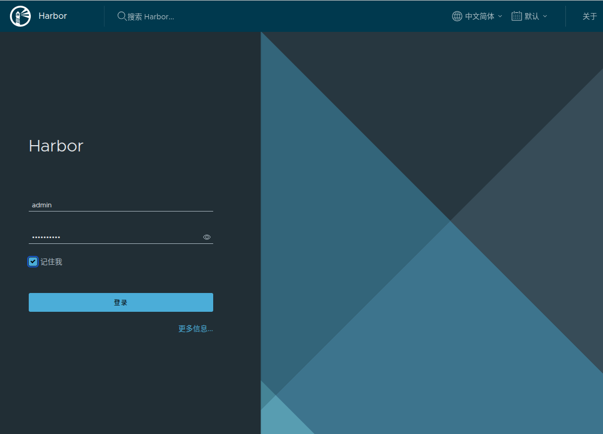
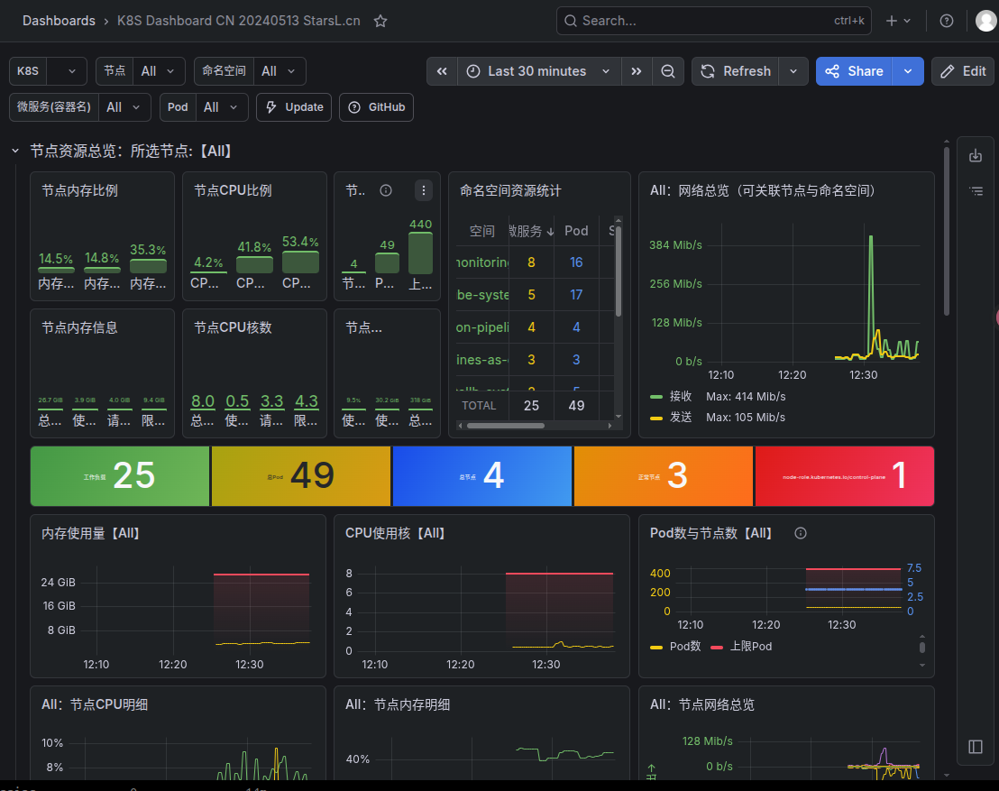
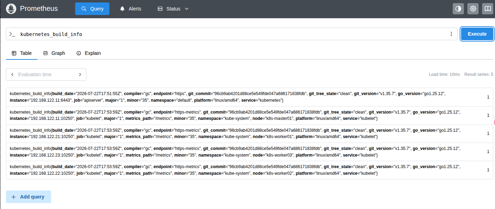
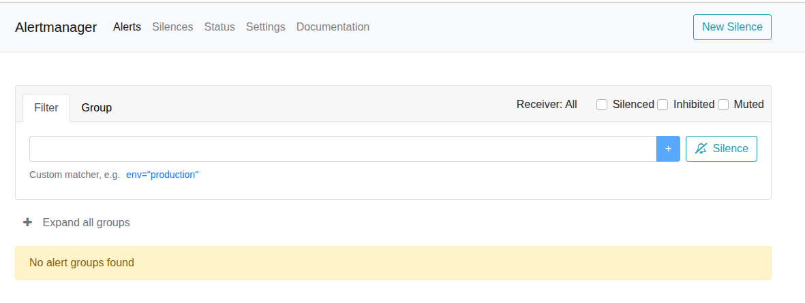
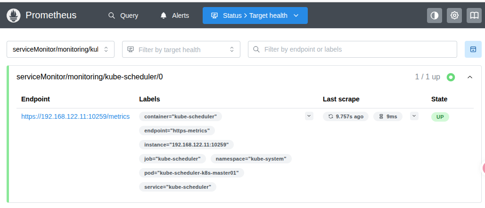
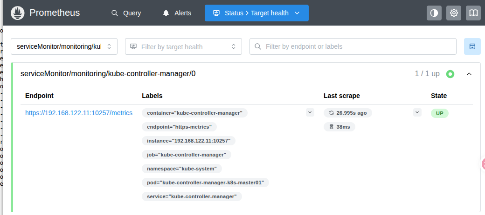

运维手册
| Description | Linux、数据库与中间件的安装、配置、备份与故障处理实践 |
| Author(s) | 运维团队 |
| Copyright | 内部技术文档 · 仅供内部学习与运维参考 |
运维手册#
Virtualization
Linux KVM#
KVM（基于内核的虚拟机器）是一种适用于 x86 硬件上的 Linux 系统的全虚拟化解决方案，它支持使用虚拟化扩展（如 Intel VT 或 AMD-V）。该解决方案由一个可加载的内核模块 kvm.ko 组成，该模块提供了核心虚拟化基础架构；此外，还有针对特定处理器的模块 kvm-intel.ko 或 kvm-amd.ko，这些模块则负责处理与处理器相关的虚拟化任务。
安装手册#
- 确认CPU 虚拟化扩展是否可用
- 加载KVM 内核模块
- 使用KVM加速
- 安装kvm软件包
- 授权用户
- 配置image路径
- 验证安装
- 创建网桥
sudo cp /etc/netplan/00-installer-config.yaml{,.bak} sudo cat > /etc/netplan/00-installer-config.yaml << 'EOF' network: version: 2 ethernets: eth0: dhcp4: false # disable existing configuration for ethernet #addresses: [192.168.1.30/24] #routes: # - to: default # via: 192.168.1.1 # metric: 100 #nameservers: # addresses: [192.168.1.10] # search: [linux.io] dhcp6: false # add configuration for bridge interface # [macaddress] ⇒ specify HW address of enp1s0 bridges: br0: interfaces: [eth0] dhcp4: false addresses: [192.168.1.7/24] routes: - to: default via: 192.168.1.1 metric: 100 nameservers: addresses: [192.168.1.1, 8.8.8.8, 223.5.5.5] search: [linux.io] parameters: stp: false dhcp6: true EOF sudo netplan apply
安装虚拟机#
sudo virt-install \
--name ubuntu2204 \
--ram 4096 \
--disk path=/var/lib/libvirt/images/ubuntu2204.img,size=80 \
--vcpus 2 \
--os-variant ubuntu22.04 \
--network bridge=br0 \
--graphics none \
--console pty,target_type=serial \
--location /home/dengyouf/ubuntu-22.04.5-live-server-amd64.iso,kernel=casper/vmlinuz,initrd=casper/initrd \
--extra-args 'console=ttyS0,115200n8'
...
================================================================================
Serial [ Help ]
================================================================================
As the installer is running on a serial console, it has started in basic
mode, using only the ASCII character set and black and white colours.
If you are connecting from a terminal emulator such as gnome-terminal that
supports unicode and rich colours you can switch to "rich mode" which uses
unicode, colours and supports many languages.
You can also connect to the installer over the network via SSH, which will
allow use of rich mode.
[ Continue in rich mode > ]
[ Continue in basic mode > ]
[ View SSH instructions ]
# 选择 [Continue in basic mode] 即开始安装，安装完成后，重启机器，开始登陆
...
Ubuntu 22.04.5 LTS mylab ttyS0
mylab login: dengyouf
Password:
~$ ip add l
1: lo: <LOOPBACK,UP,LOWER_UP> mtu 65536 qdisc noqueue state UNKNOWN group default qlen 1000
link/loopback 00:00:00:00:00:00 brd 00:00:00:00:00:00
inet 127.0.0.1/8 scope host lo
valid_lft forever preferred_lft forever
inet6 ::1/128 scope host
valid_lft forever preferred_lft forever
2: enp1s0: <BROADCAST,MULTICAST,UP,LOWER_UP> mtu 1500 qdisc fq_codel state UP group default qlen 1000
link/ether 52:54:00:15:25:e4 brd ff:ff:ff:ff:ff:ff
inet 192.168.1.102/24 metric 100 brd 192.168.1.255 scope global dynamic enp1s0
valid_lft 7026sec preferred_lft 7026sec
inet6 2408:8207:78d0:690:5054:ff:fe15:25e4/64 scope global dynamic mngtmpaddr noprefixroute
valid_lft 85066sec preferred_lft 2266sec
inet6 fe80::5054:ff:fe15:25e4/64 scope link
valid_lft forever preferred_lft forever
dengyouf@mylab:~$ lsblk
NAME MAJ:MIN RM SIZE RO TYPE MOUNTPOINTS
loop0 7:0 0 38.8M 1 loop /snap/snapd/21759
loop1 7:1 0 87M 1 loop /snap/lxd/29351
loop2 7:2 0 63.9M 1 loop /snap/core20/2318
sr0 11:0 1 1024M 0 rom
vda 252:0 0 80G 0 disk
├─vda1 252:1 0 1M 0 part
├─vda2 252:2 0 2G 0 part /boot
├─vda3 252:3 0 4G 0 part [SWAP]
└─vda4 252:4 0 74G 0 part /
dengyouf@mylab:~$ df -h
Filesystem Size Used Avail Use% Mounted on
tmpfs 392M 1.1M 391M 1% /run
/dev/vda4 73G 3.0G 66G 5% /
tmpfs 2.0G 0 2.0G 0% /dev/shm
tmpfs 5.0M 0 5.0M 0% /run/lock
/dev/vda2 2.0G 125M 1.7G 7% /boot
tmpfs 392M 4.0K 392M 1% /run/user/1000
dengyouf@mylab:~$
# 切换终端 Ctrl +]
➜ ~ sudo virsh console ubuntu2404 # 连接虚拟机
Connected to domain 'ubuntu2404'
Escape character is ^] (Ctrl + ])
dengyouf@mylab:~$
克隆虚拟机#
sudo virt-clone --auto-clone -o 00-ubuntu24.04-tmpl -n k8s-master01
sudo virt-clone --auto-clone -o 00-ubuntu24.04-tmpl -n k8s-worker01
sudo virt-clone --auto-clone -o 00-ubuntu24.04-tmpl -n k8s-worker02
sudo virt-clone --auto-clone -o 00-ubuntu24.04-tmpl -n k8s-worker03
sudo virt-ls -d k8s-master01 /etc/netplan/
sudo virt-sysprep \
--operations defaults,machine-id,-ssh-userdir,-lvm-uuids \
--hostname k8s-master01 \
--run-command \
"sed -i 's@192.168.122.250@192.168.122.111@g' \
/etc/netplan/50-cloud-init.yaml && \
dpkg-reconfigure openssh-server" -d k8s-master01
sudo virt-sysprep \
--operations defaults,machine-id,-ssh-userdir,-lvm-uuids \
--hostname k8s-worker01 \
--run-command \
"sed -i 's@192.168.122.250@192.168.122.121@g' \
/etc/netplan/50-cloud-init.yaml && \
dpkg-reconfigure openssh-server" -d k8s-worker01
sudo virt-sysprep \
--operations defaults,machine-id,-ssh-userdir,-lvm-uuids \
--hostname k8s-worker02 \
--run-command \
"sed -i 's@192.168.122.250@192.168.122.122@g' \
/etc/netplan/50-cloud-init.yaml && \
dpkg-reconfigure openssh-server" -d k8s-worker02
sudo virt-sysprep \
--operations defaults,machine-id,-ssh-userdir,-lvm-uuids \
--hostname k8s-worker03 \
--run-command \
"sed -i 's@192.168.122.250@192.168.122.123@g' \
/etc/netplan/50-cloud-init.yaml && \
dpkg-reconfigure openssh-server" -d k8s-worker03
虚拟机管理#
sudo virsh start ubuntu2404
sudo virsh shutdown ubuntu2404
sudo virsh destroy ubuntu22.04
sudo virsh start ubuntu2404 --console
虚拟化嵌套#
- 宿主机支持嵌套
- 修改 CPU 的模式
InitOs#
Ubuntu#
- 允许root用户远程登陆
-
更新apt源为阿里源
-
关闭防火墙
-
关闭selinux
-
关闭swap分区
sed -ri 's/.*swap.*/#&/' /etc/fstab
swapoff -a && sysctl -w vm.swappiness=0
# blkid 查出来 /dev/sda2:... TYPE="swap"
sudo systemctl mask dev-sda2.swap
- 时间同步
sudo apt update
sudo apt install -y ntpdate
/usr/sbin/ntpdate ntp.aliyun.com 2&>1 /dev/null
crontab -e
/usr/sbin/ntpdate ntp.aliyun.com 2&>1 /dev/null
# chrony服务端
apt install chrony -y
cat > /etc/chrony/chrony.conf << EOF
pool ntp.aliyun.com iburst
driftfile /var/lib/chrony/drift
makestep 1.0 3
rtcsync
allow 192.168.1.0/24
local stratum 10
keyfile /etc/chrony.keys
leapsectz right/UTC
logdir /var/log/chrony
EOF
systemctl restart chronyd
systemctl enable chronyd
# chrony客户端
apt install chrony -y
vim /etc/chrony/chrony.conf
cat /etc/chrony/chrony.conf | grep -v "^#" | grep -v "^$"
pool 192.168.1.111 iburst
driftfile /var/lib/chrony/drift
makestep 1.0 3
rtcsync
keyfile /etc/chrony.keys
leapsectz right/UTC
logdir /var/log/chrony
systemctl restart chronyd ; systemctl enable chronyd
# 客户端安装一条命令
apt install chrony -y
sed -i "s#2.centos.pool.ntp.org#192.168.1.111#g" /etc/chrony/chrony.conf ; systemctl restart chronyd ; systemctl enable chronyd
#使用客户端进行验证
chronyc sources -v
# 或者使用crontab -e
*/3 * * * * /usr/sbin/ntpdate ntp.aliyun.com &>/dev/null
- 安装常用软件包
apt install wget jq psmisc vim net-tools nfs-kernel-server telnet lvm2 git tar curl lrzsz -y
apt install ipvsadm ipset sysstat conntrack -y
- 配置ulimit
ulimit -SHn 65535
cat >> /etc/security/limits.conf <<EOF
* soft nofile 655360
* hard nofile 131072
* soft nproc 655350
* hard nproc 655350
* seft memlock unlimited
* hard memlock unlimitedd
EOF
- 免密登陆
# <在master01节点操作>
apt install -y sshpass
ssh-keygen -f /root/.ssh/id_rsa -P ''
export IP="192.168.1.111 192.168.1.112 192.168.1.113 192.168.1.121 192.168.1.122"
export SSHPASS=root
for HOST in $IP;do
sshpass -e ssh-copy-id -o StrictHostKeyChecking=no $HOST
done
- 配置内核模块
cat >> /etc/modules-load.d/ipvs.conf <<EOF
ip_vs
ip_vs_rr
ip_vs_wrr
ip_vs_sh
nf_conntrack
ip_tables
ip_set
xt_set
ipt_set
ipt_rpfilter
ipt_REJECT
ipip
EOF
systemctl restart systemd-modules-load.service
lsmod | grep -e ip_vs -e nf_conntrack
ip_vs_sh 16384 0
ip_vs_wrr 16384 0
ip_vs_rr 16384 0
ip_vs 155648 6 ip_vs_rr,ip_vs_sh,ip_vs_wrr
nf_conntrack 139264 1 ip_vs
nf_defrag_ipv6 24576 2 nf_conntrack,ip_vs
nf_defrag_ipv4 16384 1 nf_conntrack
libcrc32c 16384 4 nf_conntrack,btrfs,raid456,ip_vs
- 修改内核参数
cat <<EOF > /etc/sysctl.d/k8s.conf
net.ipv4.ip_forward = 1
net.bridge.bridge-nf-call-iptables = 1
fs.may_detach_mounts = 1
vm.overcommit_memory=1
vm.panic_on_oom=0
fs.inotify.max_user_watches=89100
fs.file-max=52706963
fs.nr_open=52706963
net.netfilter.nf_conntrack_max=2310720
net.ipv4.tcp_keepalive_time = 600
net.ipv4.tcp_keepalive_probes = 3
net.ipv4.tcp_keepalive_intvl =15
net.ipv4.tcp_max_tw_buckets = 36000
net.ipv4.tcp_tw_reuse = 1
net.ipv4.tcp_max_orphans = 327680
net.ipv4.tcp_orphan_retries = 3
net.ipv4.tcp_syncookies = 1
net.ipv4.tcp_max_syn_backlog = 16384
net.ipv4.ip_conntrack_max = 65536
net.ipv4.tcp_max_syn_backlog = 16384
net.ipv4.tcp_timestamps = 0
net.core.somaxconn = 16384
net.ipv6.conf.all.disable_ipv6 = 0
net.ipv6.conf.default.disable_ipv6 = 0
net.ipv6.conf.lo.disable_ipv6 = 0
net.ipv6.conf.all.forwarding = 0
EOF
sysctl --system
immortalwrt.md#
wget https://downloads.immortalwrt.org/releases/23.05.1/targets/x86/64/immortalwrt-23.05.1-x86-64-generic-ext4-combined-efi.img.gz
gzip -d immortalwrt-23.05.1-x86-64-generic-ext4-combined-efi.img.gz
sudo virt-install --name immortalwrt \
--osinfo=linux2022 --ram 1024 --vcpus 2 \
--disk path=immortalwrt-23.05.1-x86-64-generic-ext4-combined-efi.img,bus=virtio,cache=writeback \
--network bridge=virbr0,model=virtio \
--graphics=vnc,password=123456,port=5967,listen=0.0.0.0 \
--noautoconsole --import --autostart
cat /etc/config/network
config interface 'loopback'
option device 'lo'
option proto 'static'
option ipaddr '127.0.0.1'
option netmask '255.0.0.0'
config globals 'globals'
option ula_prefix 'fd88:c706:cd36::/48'
option packet_steering '1'
config device
option name 'br-lan'
option type 'bridge'
list ports 'eth0'
config interface 'lan'
option device 'br-lan'
option proto 'static'
option ipaddr '192.168.122.253'
option netmask '255.255.255.0'
option ip6assign '60'
option gateway '192.168.122.1'
list dns '223.5.5.5'
插件：
- luci-i18n-argon-config-zh-cn
- luci-app-openclash
- luci-i18n-passwall-zh-cn
- luci-i18n-homeproxy-zh-cn
wget https://github.com/moshaoli688/clash/releases/download/v1.18.0/clash-linux-amd64-v1.18.0.gz gzip -d clash-linux-amd64-v1.18.0.gz clash.meta chmod +x clash.meta
DevOps
GitLab代码管理#
基于Ubuntu 24.04 安装 Gitlab Server
环境准备#
1.主机名解析#
hostnamectl set-hostname gitlab.devops.io
echo "192.168.122.16 gitlab.devops.io gitlab" >> /etc/hosts
2.关闭防火墙和selinux#
timedatectl set-timezone Asia/Shanghai
apt install -y chrony
cat > /etc/chrony/chrony.conf << 'EOF'
pool ntp.aliyun.com iburst maxsources 4
keyfile /etc/chrony/chrony.keys
driftfile /var/lib/chrony/chrony.drift
logdir /var/log/chrony
maxupdateskew 100.0
rtcsync
makestep 1 3
EOF
systemctl restart chrony.service && systemctl enable chrony.service
chronyc sources
GitLab安装#
使用清华源 安装gitlab
1. 安装gitlab#
wget https://mirrors.tuna.tsinghua.edu.cn/gitlab-ce/ubuntu/noble/pool/main/g/gitlab-ce/gitlab-ce_17.11.7-ce.0_amd64.deb
apt install ./gitlab-ce_17.11.7-ce.0_amd64.deb
2.配置gitlab.rb#
3.启动gitlab#
4.获取初始密码#
Jenkins 持续集成#
Jenkins安装#
0. 快速安装docker#
1. 准备数据目录#
2. 创建docker-compose.yml#
cat > docker-compose.yml <<'EOF'
version: '3.8'
services:
jenkins:
image: m.daocloud.io/docker.io/jenkins/jenkins:lts
container_name: jenkins
privileged: true
ports:
- "8080:8080"
- "50000:50000"
environment:
- TZ=Asia/Shanghai
volumes:
- ./jenkins_home:/var/jenkins_home
- /etc/localtime:/etc/localtime:ro # 保证宿主机与容器时区一致
restart: always
EOF
3. 启动jenkins#
4.访问Jenkins#
- 解锁Jenkins

- 安装推荐插件

- 创建管理用户

- 实例配置

添加Agent节点#
1.从节点安装JDK#
~# wget https://mirrors.tuna.tsinghua.edu.cn/Adoptium/17/jdk/x64/linux/OpenJDK17U-jdk_x64_linux_hotspot_17.0.17_10.tar.gz
~# tar -xf OpenJDK17U-jdk_x64_linux_hotspot_17.0.17_10.tar.gz -C /usr/local
cat >> /etc/profile.d/tools.sh << 'EOF'
JAVA_HOME="/usr/local/jdk-17.0.17+10"
PATH=$JAVA_HOME/bin:$PATH
export JAVA_HOME
export PATH
EOF
. /etc/profile.d/tools.sh
~# java -version
openjdk version "17.0.17" 2025-10-21
OpenJDK Runtime Environment Temurin-17.0.17+10 (build 17.0.17+10)
OpenJDK 64-Bit Server VM Temurin-17.0.17+10 (build 17.0.17+10, mixed mode, sharing)
2.安装Agent#
-
添加Node


-
使用Java Web 方式启动代理

~# mkdir -pv /data/apps/jenkinsagent01 && cd /data/apps/jenkinsagent01
~# curl -sO http://192.168.1.130:8080/jnlpJars/agent.jar
~# cat > start.sh << "EOF"
#!/bin/bash
#
nohup java -jar agent.jar -url http://192.168.1.130:8080/ -secret 4a0349e2c1cb895933dc49ec5e9dad9c0b1a55ce7ff32e116a5697c4d6beff5c -name build01 -webSocket -workDir "/data/apps/jenkinsagent01" &
EOF
/data/apps/jenkinsagent01# bash start.sh
构建工具集成#
Maven#
1. 在构建节点安装Maven#
在构建节点安装构建工具，如果想安装到Jenkins容器，则需要将工具目录挂载到Jenkins容器里面。
# 安装jdk
~# wget https://mirrors.tuna.tsinghua.edu.cn/Adoptium/17/jdk/x64/linux/OpenJDK17U-jdk_x64_linux_hotspot_17.0.17_10.tar.gz
~# wget https://dlcdn.apache.org/maven/maven-3/3.9.11/binaries/apache-maven-3.9.11-bin.tar.gz
~# tar -xf OpenJDK17U-jdk_x64_linux_hotspot_17.0.17_10.tar.gz -C /usr/local
~# tar -xf apache-maven-3.9.11-bin.tar.gz -C /usr/local/
~# cat > /etc/profile.d/tools.sh << 'EOF'
JAVA_HOME="/usr/local/jdk-17.0.17+10/"
MAVEN_HOME=/usr/local/apache-maven-3.9.11/
PATH=$MAVEN_HOME/bin:$JAVA_HOME/bin:$PATH
export MAVEN_HOME
export JAVA_HOME
export PATH
EOF
~# . /etc/profile.d/tools.sh
~# mvn -version
Apache Maven 3.9.11 (3e54c93a704957b63ee3494413a2b544fd3d825b)
Maven home: /usr/local/apache-maven-3.9.11
Java version: 17.0.17, vendor: Eclipse Adoptium, runtime: /usr/local/jdk-17.0.17+10
Default locale: en_US, platform encoding: UTF-8
OS name: "linux", version: "6.8.0-85-generic", arch: "amd64", family: "unix"
2.配置阿里云Maven#
打开 Maven 的配置文件(一般在maven安装目录的conf/settings.xml)，在标签中添加 mirror 子节点:
~# vim /usr/local/apache-maven-3.9.11/conf/settings.xml
<mirrors>
<mirror>
<id>aliyunmaven</id>
<mirrorOf>*</mirrorOf>
<name>阿里云公共仓库</name>
<url>https://maven.aliyun.com/repository/public</url>
</mirror>
</mirrors>
3.测试maven命令#
~# git clone https://gitee.com/dengyouf/springboot-app.git
~# cd springboot-app/
~/springboot-app# mvn package -DskipTests
~/springboot-app# tree -L 1 target/
target/
├── classes
├── generated-sources
├── generated-test-sources
├── helloword-0.0.1-SNAPSHOT.jar
├── helloword-0.0.1-SNAPSHOT.jar.original
├── maven-archiver
├── maven-status
└── test-classes
7 directories, 2 files
4.配置Jenkins#
在全局工具中配置JDK和Maven
-
配置JDK

-
配置Maven

5.Jenkinsfile集成#
pipeline {
agent {
label 'build01'
}
tools {
jdk 'jdk17'
maven 'maven3'
}
stages {
stage('Checkout') {
steps {
checkout scmGit(
branches: [[name: '*/main']],
extensions: [],
userRemoteConfigs: [
[
credentialsId: 'gitlab-password-for-root',
url: 'http://192.168.1.132/devops/springboot-app.git'
]
]
)
}
}
stage('Build') {
steps {
sh"""
mvn package -DskipTests
"""
}
}
}
}
Npm#
Npm是常用的前端打包工具
1.安装nvm#
nvm全英文也叫node.js version management，是一个nodejs的版本管理工具。nvm和n都是node.js版本管理工具，为了解决node.js各种版本存在不兼容现象可以通过它可以安装和切换不同版本的node.js。
curl -o- https://ghfast.top/https://raw.githubusercontent.com/nvm-sh/nvm/v0.40.3/install.sh | bash
cat > /etc/profile.d/nvm.sh << 'EOF'
export NVM_DIR="$HOME/.nvm"
[ -s "$NVM_DIR/nvm.sh" ] && \. "$NVM_DIR/nvm.sh" # This loads nvm
[ -s "$NVM_DIR/bash_completion" ] && \. "$NVM_DIR/bash_completion"
EOF
~# . /etc/profile.d/nvm.sh
~# nvm -v
0.40.3
2.通过nvm安装node#
~# nvm install v18.20.2
~# nvm use v18.20.2
Now using node v18.20.2 (npm v10.5.0)
~# node -v
v18.20.2
3.设置源#
~# npm install -g nrm
~# nrm use ls
npm ---------- https://registry.npmjs.org/
yarn --------- https://registry.yarnpkg.com/
tencent ------ https://mirrors.tencent.com/npm/
cnpm --------- https://r.cnpmjs.org/
taobao ------- https://registry.npmmirror.com/
npmMirror ---- https://skimdb.npmjs.com/registry/
huawei ------- https://repo.huaweicloud.com/repository/npm/
~# nrm use tencent
4.安装pnpm#
5.测试打包#
~# git clone https://gitee.com/dengyouf/npm-web-service.git
# 安装依赖
~# pnpm install
# 打包
~# pnpm build
6.Jenkinsfile集成#
pipeline {
agent {
label 'build01'
}
environment {
NODE_VERSION = 'v18.20.2'
}
stages {
stage('Setup Node.js') {
steps {
sh """
# 假设 nvm 已经预安装
. /etc/profile.d/nvm.sh
nvm install ${NODE_VERSION}
nvm use ${NODE_VERSION}
"""
}
}
stage('Checkout') {
steps {
checkout scmGit(
branches: [[name: '*/main']],
extensions: [],
userRemoteConfigs: [
[
credentialsId: 'gitlab-password-for-root',
url: 'http://192.168.1.132/devops/npm-web-service.git'
]
]
)
}
}
stage('Build') {
steps {
sh """
. /etc/profile.d/nvm.sh
nvm use ${NODE_VERSION}
npm install -g pnpm
pnpm install
pnpm build
"""
}
}
}
}
Sonar-Scanner#
1.安装sonar scanner CLI#
wget https://binaries.sonarsource.com/Distribution/sonar-scanner-cli/sonar-scanner-cli-7.2.0.5079-linux-x64.zip
unzip sonar-scanner-cli-7.2.0.5079-linux-x64.zip -d /usr/local/
/usr/local/sonar-scanner-7.2.0.5079-linux-x64/bin/sonar-scanner -v
14:27:34.494 INFO Scanner configuration file: /usr/local/sonar-scanner-7.2.0.5079-linux-x64/conf/sonar-scanner.properties
14:27:34.499 INFO Project root configuration file: NONE
14:27:34.519 INFO SonarScanner CLI 7.2.0.5079
14:27:34.522 INFO Linux 6.8.0-85-generic amd64
2.测试命令#
~# cd springboot-app/
~/springboot-app# ls
mvnw mvnw.cmd pom.xml README.md src target
~/springboot-app# /usr/local/sonar-scanner-7.2.0.5079-linux-x64/bin/sonar-scanner \
-Dsonar.login=sqa_ff52ca99b716618d3d1591082a53f0ec0c0ce146 \
-Dsonar.host.url=http://192.168.1.131:9000 \
-Dsonar.branch.name=master \
-Dsonar.projectKey=springboot-app-v1 \
-Dsonar.java.binaries=target/classes \
-Dsonar.sources=src \
-Dsonar.sourceEncoding=UTF-8

3.Jenkinsfile集成#
Jenkins与Sonarqube集成需要满足下面的条件：
-
- 安装SonarQube Scanner插件

- 安装SonarQube Scanner插件
-
2.添加sonarqube token 到Jenkins的secret认证信息

-
3.系统管理配置Sonarqube Server

-
4.使用Sonar Scanner CLI扫描
pipeline { agent { label 'build01' } tools { jdk 'jdk17' maven 'maven3' } environment { SONAR_SCANNER_HOME = '/usr/local/sonar-scanner-7.2.0.5079-linux-x64' BRANCH_NAME = "${env.BUILD_ID}" PROJECT_KEY = "${env.JOB_NAME}" } stages { stage('Checkout') { steps { checkout scmGit( branches: [[name: '*/main']], extensions: [], userRemoteConfigs: [ [ credentialsId: 'gitlab-password-for-root', url: 'http://192.168.1.132/devops/springboot-app.git' ] ] ) } } stage('Build') { steps { sh""" mvn package -DskipTests """ } } stage("SonarQube Analysis") { steps { withSonarQubeEnv('SonarQube Server') { sh """ ${SONAR_SCANNER_HOME}/bin/sonar-scanner \ -Dsonar.login=${SONAR_AUTH_TOKEN} \ -Dsonar.host.url=${SONAR_HOST_URL} \ -Dsonar.branch.name=${BRANCH_NAME} \ -Dsonar.projectKey=${PROJECT_KEY} \ -Dsonar.java.binaries=target/classes \ -Dsonar.sources=src \ -Dsonar.sourceEncoding=UTF-8 """ } } } } } - 使用 Maven 的内置 Sonar 插件
pipeline { agent { label 'build01' } tools { jdk 'jdk17' maven 'maven3' } environment { BRANCH_NAME = "${env.BUILD_ID}" PROJECT_KEY = "${env.JOB_NAME}" } stages { stage('Checkout') { steps { checkout scmGit( branches: [[name: '*/main']], extensions: [], userRemoteConfigs: [ [ credentialsId: 'gitlab-password-for-root', url: 'http://192.168.1.132/devops/springboot-app.git' ] ] ) } } stage('Build') { steps { sh""" mvn package -DskipTests """ } } stage("SonarQube Analysis") { steps { withSonarQubeEnv('SonarQube Server') { sh """ mvn sonar:sonar \ -Dsonar.projectKey=${PROJECT_KEY} \ -Dsonar.host.url=${SONAR_HOST_URL} \ -Dsonar.token=${SONAR_AUTH_TOKEN} \ -Dsonar.branch.name=${BRANCH_NAME} """ } } } } } - 5.扫描结果

Docker集成#
1.docker开启远程访问#
mkdir -p /etc/systemd/system/docker.service.d
cat > /etc/systemd/system/docker.service.d/override.conf << 'EOF'
[Service]
ExecStart=
ExecStart=/usr/bin/dockerd -H unix:///var/run/docker.sock -H tcp://0.0.0.0:2375
EOF
systemctl daemon-reload && systemctl restart docker
2.Jenkinsfile集成#
构建成功的前提是Docker构建节点能正常docker login 到 harbor仓库：
- 主机名解析
- 配置好私有证书
pipeline {
agent {
label 'build01'
}
tools {
jdk 'jdk17'
maven 'maven3'
}
environment {
BRANCH_NAME = "${env.BUILD_ID}"
PROJECT_KEY = "${env.JOB_NAME}"
}
stages {
stage('Checkout') {
...
}
stage('Build') {
...
}
stage("SonarQube Analysis") {
...
}
stage("Build and Push Docker Image") {
// 生成Dockerfile
steps {
writeFile file: 'Dockerfile', text: '''\
|FROM maven:3-openjdk-17
|WORKDIR /apps
|COPY target/helloword-0.0.1-SNAPSHOT.jar /apps/
|EXPOSE 8080
|CMD ["java", "-jar", "helloword-0.0.1-SNAPSHOT.jar"]'''.stripMargin()
script {
def APP_NAME = env.JOB_NAME.split('_')[0]
def HARBOR_URL = "harbor.devops.io"
def PROJECT_NAME = "microservice"
def TAG = env.BUILD_NUMBER
def DOCKER_IMAGE = "${HARBOR_URL}/${PROJECT_NAME}/${APP_NAME}:${TAG}"
withCredentials([usernamePassword(credentialsId: 'password-for-harbor-by-root', usernameVariable: 'HarborUsername', passwordVariable: 'HarborPassword')]) {
sh """
export DOCKER_HOST=tcp://192.168.1.130:2375
docker login ${HARBOR_URL} -u ${HarborUsername} -p ${HarborPassword}
docker build -t ${DOCKER_IMAGE} .
docker push ${DOCKER_IMAGE}
"""
}
}
}
}
}
}
Helm集成#
1.安装Helm#
2.制作Helm部署模版,并提交到Gitlab仓库#
3.生成Charts并提交到Harbor仓库#
pipeline {
agent {
label 'build01'
}
tools {
jdk 'jdk17'
maven 'maven3'
}
environment {
BRANCH_NAME = "${env.BUILD_ID}"
PROJECT_KEY = "${env.JOB_NAME}"
}
stages {
stage('Checkout') {
steps {
checkout scmGit(
branches: [[name: '*/main']],
extensions: [],
userRemoteConfigs: [
[
credentialsId: 'gitlab-password-for-root',
url: 'http://192.168.1.132/devops/springboot-app.git'
]
]
)
}
}
stage('Build') {
steps {
sh"""
mvn package -DskipTests
"""
}
}
/*stage("SonarQube Analysis") {
steps {
withSonarQubeEnv('SonarQube Server') {
sh """
mvn sonar:sonar \
-Dsonar.projectKey=${PROJECT_KEY} \
-Dsonar.host.url=${SONAR_HOST_URL} \
-Dsonar.token=${SONAR_AUTH_TOKEN} \
-Dsonar.branch.name=${BRANCH_NAME}
"""
}
}
}*/
stage("Build and Push Docker Image") {
steps {
writeFile file: 'Dockerfile', text: '''\
|FROM eclipse-temurin:17-jdk-jammy
|WORKDIR /apps
|COPY target/helloword-0.0.1-SNAPSHOT.jar /apps/
|EXPOSE 8080
|CMD ["java", "-jar", "helloword-0.0.1-SNAPSHOT.jar"]'''.stripMargin()
script {
def APP_NAME = env.JOB_NAME.split('_')[0]
def HARBOR_URL = "harbor.devops.io"
def PROJECT_NAME = "microservice"
def TAG = env.BUILD_NUMBER
env.TAG = env.BUILD_NUMBER
def DOCKER_IMAGE = "${HARBOR_URL}/${PROJECT_NAME}/${APP_NAME}:${TAG}"
withCredentials([usernamePassword(credentialsId: 'password-for-harbor-by-root', usernameVariable: 'HarborUsername', passwordVariable: 'HarborPassword')]) {
sh """
export DOCKER_HOST=tcp://192.168.1.130:2375
docker login ${HARBOR_URL} -u ${HarborUsername} -p ${HarborPassword}
docker build -t ${DOCKER_IMAGE} .
docker push ${DOCKER_IMAGE}
"""
}
}
}
}
stage('Generate Helm charts') {
steps {
checkout scmGit(
branches: [[name: '*/main']],
extensions: [],
userRemoteConfigs: [
[
credentialsId: 'gitlab-password-for-root',
url: 'http://192.168.1.132/gitops/helm-springboot-app.git'
]
]
)
sh """
sed -i "s@__TAG__@${TAG}@g" values.yaml
rm -rf target
helm package . --version 0.0.${TAG}
"""
}
}
stage('Push Charts To Harbor') {
steps {
withCredentials([usernamePassword(credentialsId: 'password-for-harbor-by-root', usernameVariable: 'HarborUsername', passwordVariable: 'HarborPassword')]) {
sh """
helm registry login --ca-file /etc/docker/certs.d/harbor.devops.io/ca.crt harbor.devops.io -u ${HarborUsername} -p ${HarborPassword}
helm push --ca-file /etc/docker/certs.d/harbor.devops.io/ca.crt springboot-myapp-0.0.${TAG}.tgz oci://harbor.devops.io/charts
"""
}
}
}
}
}
Kubernetes集成#
1.安装Kubernetes CLI插件#
2.创建Secret类型认证#

3.部署到K8s集群#
pipeline {
agent {
label 'build01'
}
tools {
jdk 'jdk17'
maven 'maven3'
}
environment {
BRANCH_NAME = "${env.BUILD_ID}"
PROJECT_KEY = "${env.JOB_NAME}"
APP_NAME = "${PROJECT_KEY}"
HARBOR_URL = "harbor.devops.io"
PROJECT_NAME = "microservice"
TAG = "${env.BUILD_ID}"
DOCKER_IMAGE = "${HARBOR_URL}/${PROJECT_NAME}/${APP_NAME}:${TAG}"
}
stages {
stage('Clean Workspace') {
steps {
cleanWs()
}
}
stage('Checkout') {
steps {
checkout scmGit(
branches: [[name: '*/main']],
extensions: [],
userRemoteConfigs: [
[
credentialsId: 'gitlab-password-for-root',
url: 'http://192.168.1.132/devops/springboot-app.git'
]
]
)
}
}
stage('Build') {
steps {
sh"""
mvn package -DskipTests
"""
}
}
/*stage("SonarQube Analysis") {
steps {
withSonarQubeEnv('SonarQube Server') {
sh """
mvn sonar:sonar \
-Dsonar.projectKey=${PROJECT_KEY} \
-Dsonar.host.url=${SONAR_HOST_URL} \
-Dsonar.token=${SONAR_AUTH_TOKEN} \
-Dsonar.branch.name=${BRANCH_NAME}
"""
}
}
}*/
stage("Build and Push Docker Image") {
steps {
writeFile file: 'Dockerfile', text: '''\
|FROM eclipse-temurin:17-jdk-jammy
|WORKDIR /apps
|COPY target/helloword-0.0.1-SNAPSHOT.jar /apps/
|EXPOSE 8080
|CMD ["java", "-jar", "/apps/helloword-0.0.1-SNAPSHOT.jar"]'''.stripMargin()
script {
/*
def APP_NAME = env.JOB_NAME.split('_')[0]
def HARBOR_URL = "harbor.devops.io"
def PROJECT_NAME = "microservice"
def TAG = env.BUILD_NUMBER
env.TAG = env.BUILD_NUMBER
def DOCKER_IMAGE = "${HARBOR_URL}/${PROJECT_NAME}/${APP_NAME}:${TAG}"
*/
withCredentials([usernamePassword(credentialsId: 'password-for-harbor-by-root', usernameVariable: 'HarborUsername', passwordVariable: 'HarborPassword')]) {
sh """
export DOCKER_HOST=tcp://192.168.1.130:2375
docker login ${HARBOR_URL} -u ${HarborUsername} -p ${HarborPassword}
docker build -t ${DOCKER_IMAGE} .
docker push ${DOCKER_IMAGE}
"""
}
}
}
}
stage('Generate Helm charts') {
steps {
checkout scmGit(
branches: [[name: '*/main']],
extensions: [],
userRemoteConfigs: [
[
credentialsId: 'gitlab-password-for-root',
url: 'http://192.168.1.132/gitops/helm-springboot-app.git'
]
]
)
sh """
sed -i "s@__TAG__@${TAG}@g" values.yaml
rm -rf target
helm package . --version 0.0.${TAG}
"""
}
}
stage('Push Charts To Harbor') {
steps {
withCredentials([usernamePassword(credentialsId: 'password-for-harbor-by-root', usernameVariable: 'HarborUsername', passwordVariable: 'HarborPassword')]) {
sh """
helm registry login --ca-file /etc/docker/certs.d/harbor.devops.io/ca.crt harbor.devops.io -u ${HarborUsername} -p ${HarborPassword}
helm push --ca-file /etc/docker/certs.d/harbor.devops.io/ca.crt springboot-myapp-0.0.${TAG}.tgz oci://harbor.devops.io/charts
"""
}
}
}
stage('Deploy Application to K8s') {
steps {
withKubeConfig(caCertificate: '', clusterName: '', contextName: '', credentialsId: 'kubeconfig-k8s-dev', namespace: '', restrictKubeConfigAccess: false, serverUrl: '') {
sh"""
helm upgrade --install ${APP_NAME} oci://harbor.devops.io/charts/springboot-myapp --version 0.0.${TAG} --ca-file /etc/docker/certs.d/harbor.devops.io/ca.crt
"""
}
}
}
}
}

企业级Harbor镜像仓库#
主机环境准备#
使用Docker快速部署Harbor镜像仓库，操作系统为Ubuntu 24.04.2 LTS(noble)，用到的各相关程序版本如下:
1.主机名解析#
hostnamectl set-hostname harbor.devops.io
echo "192.168.122.17 harbor.devops.io harbor" >> /etc/hosts
2.关闭防火墙和selinux#
timedatectl set-timezone Asia/Shanghai
apt install -y chrony
cat > /etc/chrony/chrony.conf << 'EOF'
pool ntp.aliyun.com iburst maxsources 4
keyfile /etc/chrony/chrony.keys
driftfile /var/lib/chrony/chrony.drift
logdir /var/log/chrony
maxupdateskew 100.0
rtcsync
makestep 1 3
EOF
systemctl restart chrony.service && systemctl enable chrony.service
chronyc sources
4.开启内核转发#
cat > /etc/sysctl.d/99-kubernetes-cri.conf <<EOF
net.bridge.bridge-nf-call-iptables = 1
net.ipv4.ip_forward = 1
net.bridge.bridge-nf-call-ip6tables = 1
EOF
sysctl --system
安装docker#
1.安装docker#
sudo apt-get remove docker docker-engine docker.io
sudo apt-get install apt-transport-https ca-certificates curl gnupg2 software-properties-common
curl -fsSL https://mirrors.huaweicloud.com/docker-ce/linux/ubuntu/gpg | sudo apt-key add -
sudo add-apt-repository "deb [arch=amd64] https://mirrors.huaweicloud.com/docker-ce/linux/ubuntu $(lsb_release -cs) stable"
sudo apt-get update
sudo apt-get install -y docker-ce
docker version
Client: Docker Engine - Community
Version: 28.5.1
API version: 1.51
Go version: go1.24.8
Git commit: e180ab8
Built: Wed Oct 8 12:17:26 2025
OS/Arch: linux/amd64
Context: default
Server: Docker Engine - Community
Engine:
Version: 28.5.1
API version: 1.51 (minimum version 1.24)
Go version: go1.24.8
Git commit: f8215cc
Built: Wed Oct 8 12:17:26 2025
OS/Arch: linux/amd64
Experimental: false
containerd:
Version: v1.7.28
GitCommit: b98a3aace656320842a23f4a392a33f46af97866
runc:
Version: 1.3.0
GitCommit: v1.3.0-0-g4ca628d1
docker-init:
Version: 0.19.0
GitCommit: de40ad0
2.配置docker数据目录#
systemctl stop docker docker.socket
mkdir /data
mv /var/lib/docker /data/
ln -sv /data/docker /var/lib/docker
systemctl enable docker --now
3.配置加速器#
tee /etc/docker/daemon.json << 'EOF'
{
"exec-opts": ["native.cgroupdriver=systemd"],
"registry-mirrors": [
"https://o4uba187.mirror.aliyuncs.com",
"https://docker.1ms.run",
"https://docker.1panel.live"
]
}
EOF
systemctl daemon-reload
安装Harbor#
1.获取离线包#
wget https://gh-proxy.org/https://github.com/goharbor/harbor/releases/download/v2.14.0/harbor-offline-installer-v2.14.0.tgz
tar -xf harbor-offline-installer-v2.14.0.tgz -C /data/
2.生成证书#
mkdir /data/harbor/ssl && cd /data/harbor/ssl
# 1. Generate a CA certificate private key.
openssl genrsa -out ca.key 4096
# 2. Generate the CA certificate.
openssl req -x509 -new -nodes -sha512 -days 3650 \
-subj "/C=CN/ST=Beijing/L=Beijing/O=example/OU=Personal/CN=harbor.devops.io" \
-key ca.key \
-out ca.crt
# 3. Generate a private key for harbor server.
openssl genrsa -out harbor.devops.io.key 4096
# 4. Generate a certificate signing request (CSR).
openssl req -sha512 -new \
-subj "/C=CN/ST=Beijing/L=Beijing/O=example/OU=Personal/CN=harbor.devops.io" \
-key harbor.devops.io.key \
-out harbor.devops.io.csr
# 5. Generate an x509 v3 extension file.
cat > v3.ext <<-EOF
authorityKeyIdentifier=keyid,issuer
basicConstraints=CA:FALSE
keyUsage = digitalSignature, nonRepudiation, keyEncipherment, dataEncipherment
extendedKeyUsage = serverAuth
subjectAltName = @alt_names
[alt_names]
DNS.1=harbor.devops.io
DNS.2=harbor.devops.io
DNS.3=192.168.122.17
EOF
# 6. Use the v3.ext file to generate a certificate for your Harbor host.
openssl x509 -req -sha512 -days 3650 \
-extfile v3.ext \
-CA ca.crt -CAkey ca.key -CAcreateserial \
-in harbor.devops.io.csr \
-out harbor.devops.io.crt
Certificate request self-signature ok
subject=C = CN, ST = Beijing, L = Beijing, O = example, OU = Personal, CN = harbor.devops.io
3.配置harbor.yml#
cd /data/harbor/ && cp harbor.yml.tmpl harbor.yml
sed -i 's@hostname: reg.mydomain.com@hostname: harbor.devops.io@g' harbor.yml
sed -i 's@certificate: /your/certificate/path@certificate: /data/harbor/ssl/harbor.devops.io.crt@g' harbor.yml
sed -i 's@private_key: /your/private/key/path@private_key: /data/harbor/ssl/harbor.devops.io.key@g' harbor.yml
grep -E "hostname: |certificate:|private_key:" harbor.yml
hostname: harbor.devops.io
certificate: /data/harbor/ssl/harbor.devops.io.crt
private_key: /data/harbor/ssl/harbor.devops.io.key
4.执行prepare脚本#
5.执行install脚本#
6.访问UI#

配置docker使用#
1.配置认证证书#
# 转换证书
cd /data/harbor/ssl
openssl x509 -inform PEM -in harbor.devops.io.crt -out harbor.devops.io.cert
mkdir -pv /etc/docker/certs.d/harbor.devops.io/
cp /data/harbor/ssl/{harbor.devops.io.cert,harbor.devops.io.key,ca.crt} /etc/docker/certs.d/harbor.devops.io/
2.上传镜像#
docker pull m.daocloud.io/docker.io/nginx:1.30
docker tag m.daocloud.io/docker.io/nginx:1.30 harbor.devops.io/devops/nginx:1.30
docker login harbor.devops.io -u admin -p Harbor12345
docker push harbor.devops.io/devops/myapp:v1
如果失效，把 Harbor CA 证书加入系统信任
cp /data/harbor/ssl/ca.crt /usr/local/share/ca-certificates/harbor.devops.io.crt
update-ca-certificates
systemctl restart docker
配置containerd使用#
# 配置config_path路径
grep -B 2 config_path /etc/containerd/config.toml
[plugins."io.containerd.grpc.v1.cri".registry]
config_path = "/etc/containerd/certs.d"
systemctl restart containerd
mkdir -pv /etc/containerd/certs.d/harbor.devops.io
scp harbor.devops.io:/data/harbor/ssl/ca.crt /etc/containerd/certs.d/harbor.devops.io
cat > /etc/containerd/certs.d/harbor.devops.io/hosts.toml << 'EOF'
server = "https://harbor.devops.io"
[host."https://harbor.devops.io"]
capabilities = ["pull", "resolve","push"]
skip_verify = false
ca = ["ca.crt"]
EOF
1.配置Pod拉去Secret#
kubectl create secret docker-registry harbor-secret \
--docker-server=harbor.devops.io \
--docker-username=admin \
--docker-password=Harbor12345 \
--docker-email=harbro@devops.com \
-n default
cat > nginx.yaml << EOF
---
apiVersion: apps/v1
kind: Deployment
metadata:
labels:
app: nginx
name: nginx
namespace: default
spec:
progressDeadlineSeconds: 600
replicas: 3
revisionHistoryLimit: 10
selector:
matchLabels:
app: nginx
strategy:
rollingUpdate:
maxSurge: 25%
maxUnavailable: 25%
type: RollingUpdate
template:
metadata:
labels:
app: nginx
spec:
imagePullSecrets:
- name: harbor-secret
containers:
- name: nginx
image: harbor.devops.io/devops/nginx:1.30
imagePullPolicy: IfNotPresent
restartPolicy: Always
EOF
kubectl apply -f nginx.yaml
Kubernetes
Container
Docker#
Docker 是一个开源的容器化引擎。 可以帮助开发者将应用程序以及它运行所需的所有依赖（环境、库、配置文件），打包成一个轻量级、可移植的“集装箱”（Container），从而实现“一次构建，处处运行”。其通过容器化的应用环境，解决了环境管理的复杂问题，让应用的部署和运维变得更加简单和高效。。
- 一次构建到处运行
- 更强的一致性
- 可移植性强
- 提升资源利用率
- 创建和启动速度快
- 更细粒度的隔离性
安装手册#
官网:
https://docs.docker.com/engine/install/
- 在安装 Docker Engine 之前，需要卸载任何冲突的软件包,然后安装依赖
- 下载并保存密钥
- 配置DEB822格式的源文件，添加软件仓库
- 更新索引文件并安装指定版本
- 配置
mkdir -pv /etc/containerd containerd config default | sudo tee /etc/containerd/config.toml # 修改cgroup Driver为systemd sed -ri 's@SystemdCgroup = false@SystemdCgroup = true@' /etc/containerd/config.toml # 更改sandbox_image sed -ri 's@registry.k8s.io\/pause:3.8@registry.cn-hangzhou.aliyuncs.com\/google_containers\/pause:3.9@' /etc/containerd/config.toml # 配置containerd 的镜像存储目录 sed -i 's@root = "/var/lib/containerd"@root = "/data/containerd"@g' /etc/containerd/config.toml - 启动并设置服务开机自启动
- 迁移已有数据
- 下载二进制文件
- 解压并移动到可执行文件路径上
-
配置docker
mkdir /etc/docker cat > /etc/docker/daemon.json << EOF { "exec-opts": ["native.cgroupdriver=systemd"], "max-concurrent-downloads": 10, "max-concurrent-uploads": 10, "log-driver": "json-file", "storage-driver": "overlay2", "data-root": "/data/docker", "log-opts":{ "max-size": "300m", "max-file": "2" }, "registry-mirrors": ["https://docker.m.daocloud.io"], "live-restore": true } EOF -
提供启动脚本并启动
cat > /usr/lib/systemd/system/docker.service << EOF [Unit] Description=Docker Application Container Engine Documentation=https://docs.docker.com After=network-online.target firewalld.service Wants=network-online.target [Service] Type=notify ExecStart=/usr/bin/dockerd ExecReload=/bin/kill -s HUP $MAINPID LimitNOFILE=infinity LimitNPROC=infinity LimitCORE=infinity TimeoutStartSec=0 Delegate=yes KillMode=process Restart=on-failure StartLimitBurst=3 StartLimitInterval=60s [Install] WantedBy=multi-user.target EOF systemctl enable docker --now
- 卸载 Docker Engine、CLI、containerd 和 Docker Compose 软件包
- 主机上的镜像、容器、卷或自定义配置文件不会自动删除。要删除所有镜像、容器和卷
- 删除源列表和密钥环
常规配置#
代理#
sudo mkdir -p /etc/systemd/system/docker.service.d
cat > /etc/systemd/system/docker.service.d/proxy.conf << EOF
[Service]
Environment="HTTP_PROXY=http://192.168.122.1:7897"
Environment="HTTP_PROXY=http://192.168.122.1:7897"
nvironment="NO_PROXY=localhost,127.0.0.1,.example.com"
EOF
systemctl daemon-reload && systemctl restart docker
Containerd#
Containerd 是一个行业标准的容器运行时环境，注重简洁性、健壮性和可移植性。它以守护进程的形式支持 Linux 和 Windows 系统，能够管理宿主系统容器的完整生命周期：镜像传输和存储、容器执行和监控、底层存储和网络连接等。
安装手册#
官网:
https://containerd.io/docs/2.4/getting-started/
- 卸载任何冲突的软件包,然后安装依赖
- 下载并保存密钥
- 配置DEB822格式的源文件，添加软件仓库
- 更新索引文件并安装指定版本
配置代理#
mkdir -p /etc/systemd/system/containerd.service.d
cat > /etc/systemd/system/containerd.service.d/http-proxy.conf << 'EOF'
[Service]
Environment="HTTP_PROXY=http://192.168.122.1:7897"
Environment="HTTP_PROXY=http://192.168.122.1:7897"
Environment="NO_PROXY=localhost,127.0.0.1,10.244.0.0/16,10.96.0.0/12,.svc,.cluster.local,k8s-vip,*.devops.io"
EOF
systemctl daemon-reload
systemctl restart containerd
systemctl show containerd --property=Environment
Environment=HTTP_PROXY=http://192.168.122.1:7897 "NO_PROXY=localhost,127.0.0.1,10.244.0.0/16,10.96.0.0/12,.svc,.cluster.local,k8s-vip,*.devops.io"
curl -x http://192.168.122.1:7897 -I https://registry-1.docker.io/v2/ --connect-timeout 5
HTTP/1.1 200 Connection established
HTTP/2 401
date: Sat, 21 Nov 2026 07:16:31 GMT
content-type: application/json
content-length: 87
docker-distribution-api-version: registry/2.0
www-authenticate: Bearer realm="https://auth.docker.io/token",service="registry.docker.io"
x-ratelimit-limit: 1500;w=60
ratelimit-limit: 1500;w=60
x-ratelimit-remaining: 1490;w=60
ratelimit-remaining: 1490;w=60
strict-transport-security: max-age=31536000
Setup
kubeadm
Kubeadm 安装 Kubernetes v1.30.12(Containerd)#
主机环境准备#
使用Kubeadm快速部署Kubernetes集群，操作系统为Ubuntu 24.04.2 LTS(noble)，用到的各相关程序版本如下:
- Kubernetes: v1.30.12
- Contianerd: v1.7.28
- Calico: v3.29.6
| 主机名 | IP | 角色 |
|---|---|---|
| k8s-master01 | 192.168.1.111 | master |
| k8s-worker01 | 192.168.1.121 | worker |
| k8s-worker02 | 192.168.1.122 | worker |
| k8s-worker03 | 192.168.1.123 | worker |
1.配置国内源#
cat > /etc/apt/sources.list.d/ubuntu.list << 'EOF'
deb https://mirrors.aliyun.com/ubuntu/ noble main restricted universe multiverse
deb-src https://mirrors.aliyun.com/ubuntu/ noble main restricted universe multiverse
deb https://mirrors.aliyun.com/ubuntu/ noble-security main restricted universe multiverse
deb-src https://mirrors.aliyun.com/ubuntu/ noble-security main restricted universe multiverse
deb https://mirrors.aliyun.com/ubuntu/ noble-updates main restricted universe multiverse
deb-src https://mirrors.aliyun.com/ubuntu/ noble-updates main restricted universe multiverse
# deb https://mirrors.aliyun.com/ubuntu/ noble-proposed main restricted universe multiverse
# deb-src https://mirrors.aliyun.com/ubuntu/ noble-proposed main restricted universe multiverse
deb https://mirrors.aliyun.com/ubuntu/ noble-backports main restricted universe multiverse
deb-src https://mirrors.aliyun.com/ubuntu/ noble-backports main restricted universe multiverse
EOF
# step 1: 安装必要的一些系统工具
sudo apt-get update
sudo apt-get install ca-certificates curl gnupg
# step 2: 信任 Docker 的 GPG 公钥
sudo install -m 0755 -d /etc/apt/keyrings
curl -fsSL https://mirrors.aliyun.com/docker-ce/linux/ubuntu/gpg | sudo gpg --dearmor -o /etc/apt/keyrings/docker.gpg
sudo chmod a+r /etc/apt/keyrings/docker.gpg
# Step 3: 写入软件源信息
echo \
"deb [arch=$(dpkg --print-architecture) signed-by=/etc/apt/keyrings/docker.gpg] https://mirrors.aliyun.com/docker-ce/linux/ubuntu \
"$(. /etc/os-release && echo "$VERSION_CODENAME")" stable" | \
sudo tee /etc/apt/sources.list.d/docker.list > /dev/null
# Step 4: 安装Docker
sudo apt-get update
# 安装指定版本的Docker-CE:
# Step 1: 查找Docker-CE的版本:
# apt-cache madison docker-ce
# docker-ce | 17.03.1~ce-0~ubuntu-xenial | https://mirrors.aliyun.com/docker-ce/linux/ubuntu xenial/stable amd64 Packages
# docker-ce | 17.03.0~ce-0~ubuntu-xenial | https://mirrors.aliyun.com/docker-ce/linux/ubuntu xenial/stable amd64 Packages
# Step 2: 安装指定版本的Docker-CE: (VERSION例如上面的17.03.1~ce-0~ubuntu-xenial)
# sudo apt-get -y install docker-ce=[VERSION]
apt-get update && apt-get install -y apt-transport-https
curl -fsSL https://mirrors.aliyun.com/kubernetes-new/core/stable/v1.30/deb/Release.key |
gpg --dearmor -o /etc/apt/keyrings/kubernetes-apt-keyring.gpg
echo "deb [signed-by=/etc/apt/keyrings/kubernetes-apt-keyring.gpg] https://mirrors.aliyun.com/kubernetes-new/core/stable/v1.30/deb/ /" |
tee /etc/apt/sources.list.d/kubernetes.list
apt-get update
2.主机名解析#
cat >> /etc/hosts << 'EOF'
192.168.1.111 k8s-master01
192.168.1.121 k8s-worker01
192.168.1.122 k8s-worker02
192.168.1.123 k8s-worker03
# k8s-vip 预留后期扩展高可用集群
192.168.1.111 k8s-vip
EOF
3.关闭防火墙和selinux(Ubuntu不用管SELinux)#
4.关闭swap分区#
sed -i 's/.*swap.*/#&/' /etc/fstab
swapoff -a && sysctl -w vm.swappiness=0
systemctl mask swap.target
5.时区跟时间同步#
timedatectl set-timezone Asia/Shanghai
apt install -y chrony
cat > /etc/chrony/chrony.conf << 'EOF'
pool ntp.aliyun.com iburst maxsources 4
keyfile /etc/chrony/chrony.keys
driftfile /var/lib/chrony/chrony.drift
logdir /var/log/chrony
maxupdateskew 100.0
rtcsync
makestep 1 3
EOF
systemctl restart chrony.service && systemctl enable chrony.service
chronyc sources
MS Name/IP address Stratum Poll Reach LastRx Last sample
===============================================================================
^* 203.107.6.88 2 6 7 1 -4176us[ +806us] +/- 29ms
6.加载IPVS模块#
apt install ipset ipvsadm -y
cat >> /etc/modules-load.d/k8s.conf << 'EOF'
br_netfilter
ip_vs
ip_vs_rr
ip_vs_wrr
ip_vs_sh
nf_conntrack
nf_nat
overlay
vxlan
iptable_nat
xt_MASQUERADE
EOF
systemctl restart systemd-modules-load
lsmod | grep -E 'br_netfilter|ip_vs|nf_conntrack|overlay|vxlan'
7.内核参数优化#
cat > /etc/sysctl.d/k8s.conf << 'EOF'
# 开启IPv4转发
net.ipv4.ip_forward = 1
# 允许桥接的流量进入iptables/netfilter
net.bridge.bridge-nf-call-iptables = 1
net.bridge.bridge-nf-call-ip6tables = 1
# 优化连接跟踪表大小，防止大规模连接爆掉
net.netfilter.nf_conntrack_max = 2310720
# TCP优化（缩短 TIME_WAIT，快速回收连接）
net.ipv4.tcp_tw_reuse = 1
net.ipv4.tcp_fin_timeout = 15
net.ipv4.tcp_keepalive_time = 600
net.ipv4.tcp_keepalive_intvl = 30
net.ipv4.tcp_keepalive_probes = 5
# 内存相关优化（防止OOM）
vm.swappiness = 0
vm.overcommit_memory = 1
vm.panic_on_oom = 0
# 文件句柄限制
fs.file-max = 52706963
# 网络层面优化
net.core.somaxconn = 32768
net.core.netdev_max_backlog = 16384
net.ipv4.tcp_max_syn_backlog = 16384
EOF
sysctl --system
cat >> /etc/security/limits.conf << 'EOF'
* soft nofile 1048576
* hard nofile 1048576
* soft nproc 1048576
* hard nproc 1048576
* soft memlock unlimited
* hard memlock unlimited
EOF
ulimit -n 64435
ulimit -s 10240
安装容器运行时#
1.安装指定版本的容器运行时#
2.配置contianerd#
mkdir -pv /etc/containerd
containerd config default | sudo tee /etc/containerd/config.toml
# 修改cgroup Driver为systemd
sed -ri 's@SystemdCgroup = false@SystemdCgroup = true@' /etc/containerd/config.toml
# 更改sandbox_image
sed -ri 's@registry.k8s.io\/pause:3.8@registry.cn-hangzhou.aliyuncs.com\/google_containers\/pause:3.9@' /etc/containerd/config.toml
# 配置containerd 的镜像存储目录
sed -i 's@root = "/var/lib/containerd"@root = "/data/containerd"@g' /etc/containerd/config.toml
sed -i 's@config_path = ""@config_path = "\/etc\/containerd\/certs.d\/"@g' /etc/containerd/config.toml
# docker.io 镜像加速
mkdir -p /etc/containerd/certs.d/docker.io
cat > /etc/containerd/certs.d/docker.io/hosts.toml << 'EOF'
server = "https://docker.io" # 源镜像地址
[host."https://docker.1ms.run"]
capabilities = ["pull","resolve"]
[host."https://docker.m.daocloud.io"] # 道客-镜像加速地址
capabilities = ["pull","resolve"]
[host."https://dockerproxy.com"] # 镜像加速地址
capabilities = ["pull", "resolve"]
[host."https://docker.mirrors.sjtug.sjtu.edu.cn"] # 上海交大-镜像加速地址
capabilities = ["pull","resolve"]
[host."https://docker.mirrors.ustc.edu.cn"] # 中科大-镜像加速地址
capabilities = ["pull","resolve"]
[host."https://docker.nju.edu.cn"] # 南京大学-镜像加速地址
capabilities = ["pull","resolve"]
[host."https://registry-1.docker.io"]
capabilities = ["pull","resolve","push"]
EOF
# registry.k8s.io 镜像加速
mkdir -p /etc/containerd/certs.d/registry.k8s.io
cat > /etc/containerd/certs.d/registry.k8s.io/hosts.toml << 'EOF'
server = "https://registry.k8s.io"
[host."https://k8s.m.daocloud.io"]
capabilities = ["pull", "resolve", "push"]
EOF
# quay.io 镜像加速
mkdir -p /etc/containerd/certs.d/quay.io
cat > /etc/containerd/certs.d/quay.io/hosts.toml << 'EOF'
server = "https://quay.io"
[host."https://quay.m.daocloud.io"]
capabilities = ["pull", "resolve", "push"]
EOF
# docker.elastic.co镜像加速
mkdir -p /etc/containerd/certs.d/docker.elastic.co
tee /etc/containerd/certs.d/docker.elastic.co/hosts.toml << 'EOF'
server = "https://docker.elastic.co"
[host."https://elastic.m.daocloud.io"]
capabilities = ["pull", "resolve", "push"]
EOF
systemctl daemon-reload && systemctl restart containerd && systemctl enable containerd
4.安装crictl客户端#
wget https://ghfast.top/https://github.com/kubernetes-sigs/cri-tools/releases/download/v1.24.0/crictl-v1.24.0-linux-amd64.tar.gz
tar -zxvf crictl-v1.24.0-linux-amd64.tar.gz -C /usr/local/bin
cat > /etc/crictl.yaml <<EOF
runtime-endpoint: unix:///var/run/containerd/containerd.sock
image-endpoint: unix:///var/run/containerd/containerd.sock
timeout: 10
debug: false
pull-image-on-create: false
EOF
安装Kubernetes集群#
1.安装kubeadm软件包#
2.配置kubelet开机自启#
3.集群安装#
3.1.Master 节点初始化#
# 提前拉取镜像
kubeadm config images pull --image-repository=registry.cn-hangzhou.aliyuncs.com/google_containers --kubernetes-version=1.30.12
kubeadm init \
--kubernetes-version=1.30.12 \
--control-plane-endpoint="k8s-vip" \
--image-repository=registry.cn-hangzhou.aliyuncs.com/google_containers \
--pod-network-cidr=10.244.0.0/16 \
--service-cidr=10.96.0.0/12 \
--token-ttl=0 \
--upload-certs|tee kubeadm.log
[init] Using Kubernetes version: v1.30.12
[preflight] Running pre-flight checks
[preflight] Pulling images required for setting up a Kubernetes cluster
[preflight] This might take a minute or two, depending on the speed of your internet connection
[preflight] You can also perform this action in beforehand using 'kubeadm config images pull'
[certs] Using certificateDir folder "/etc/kubernetes/pki"
[certs] Generating "ca" certificate and key
[certs] Generating "apiserver" certificate and key
[certs] apiserver serving cert is signed for DNS names [k8s-master01 k8s-vip kubernetes kubernetes.default kubernetes.default.svc kubernetes.default.svc.cluster.local] and IPs [10.96.0.1 192.168.1.111]
[certs] Generating "apiserver-kubelet-client" certificate and key
[certs] Generating "front-proxy-ca" certificate and key
[certs] Generating "front-proxy-client" certificate and key
[certs] Generating "etcd/ca" certificate and key
[certs] Generating "etcd/server" certificate and key
[certs] etcd/server serving cert is signed for DNS names [k8s-master01 localhost] and IPs [192.168.1.111 127.0.0.1 ::1]
[certs] Generating "etcd/peer" certificate and key
[certs] etcd/peer serving cert is signed for DNS names [k8s-master01 localhost] and IPs [192.168.1.111 127.0.0.1 ::1]
[certs] Generating "etcd/healthcheck-client" certificate and key
[certs] Generating "apiserver-etcd-client" certificate and key
[certs] Generating "sa" key and public key
[kubeconfig] Using kubeconfig folder "/etc/kubernetes"
[kubeconfig] Writing "admin.conf" kubeconfig file
[kubeconfig] Writing "super-admin.conf" kubeconfig file
[kubeconfig] Writing "kubelet.conf" kubeconfig file
[kubeconfig] Writing "controller-manager.conf" kubeconfig file
[kubeconfig] Writing "scheduler.conf" kubeconfig file
[etcd] Creating static Pod manifest for local etcd in "/etc/kubernetes/manifests"
[control-plane] Using manifest folder "/etc/kubernetes/manifests"
[control-plane] Creating static Pod manifest for "kube-apiserver"
[control-plane] Creating static Pod manifest for "kube-controller-manager"
[control-plane] Creating static Pod manifest for "kube-scheduler"
[kubelet-start] Writing kubelet environment file with flags to file "/var/lib/kubelet/kubeadm-flags.env"
[kubelet-start] Writing kubelet configuration to file "/var/lib/kubelet/config.yaml"
[kubelet-start] Starting the kubelet
[wait-control-plane] Waiting for the kubelet to boot up the control plane as static Pods from directory "/etc/kubernetes/manifests"
[kubelet-check] Waiting for a healthy kubelet at http://127.0.0.1:10248/healthz. This can take up to 4m0s
[kubelet-check] The kubelet is healthy after 1.002218069s
[api-check] Waiting for a healthy API server. This can take up to 4m0s
[api-check] The API server is healthy after 5.504002718s
[upload-config] Storing the configuration used in ConfigMap "kubeadm-config" in the "kube-system" Namespace
[kubelet] Creating a ConfigMap "kubelet-config" in namespace kube-system with the configuration for the kubelets in the cluster
[upload-certs] Storing the certificates in Secret "kubeadm-certs" in the "kube-system" Namespace
[upload-certs] Using certificate key:
b02bcd4ca23ffb9ea4aaf72cd7fecb745592efd7acb50ce49d651b0c676780c5
[mark-control-plane] Marking the node k8s-master01 as control-plane by adding the labels: [node-role.kubernetes.io/control-plane node.kubernetes.io/exclude-from-external-load-balancers]
[mark-control-plane] Marking the node k8s-master01 as control-plane by adding the taints [node-role.kubernetes.io/control-plane:NoSchedule]
[bootstrap-token] Using token: 2zzmat.b1omkhqhuns4s30x
[bootstrap-token] Configuring bootstrap tokens, cluster-info ConfigMap, RBAC Roles
[bootstrap-token] Configured RBAC rules to allow Node Bootstrap tokens to get nodes
[bootstrap-token] Configured RBAC rules to allow Node Bootstrap tokens to post CSRs in order for nodes to get long term certificate credentials
[bootstrap-token] Configured RBAC rules to allow the csrapprover controller automatically approve CSRs from a Node Bootstrap Token
[bootstrap-token] Configured RBAC rules to allow certificate rotation for all node client certificates in the cluster
[bootstrap-token] Creating the "cluster-info" ConfigMap in the "kube-public" namespace
[kubelet-finalize] Updating "/etc/kubernetes/kubelet.conf" to point to a rotatable kubelet client certificate and key
[addons] Applied essential addon: CoreDNS
[addons] Applied essential addon: kube-proxy
Your Kubernetes control-plane has initialized successfully!
To start using your cluster, you need to run the following as a regular user:
mkdir -p $HOME/.kube
sudo cp -i /etc/kubernetes/admin.conf $HOME/.kube/config
sudo chown $(id -u):$(id -g) $HOME/.kube/config
Alternatively, if you are the root user, you can run:
export KUBECONFIG=/etc/kubernetes/admin.conf
You should now deploy a pod network to the cluster.
Run "kubectl apply -f [podnetwork].yaml" with one of the options listed at:
https://kubernetes.io/docs/concepts/cluster-administration/addons/
You can now join any number of the control-plane node running the following command on each as root:
kubeadm join k8s-vip:6443 --token 2zzmat.b1omkhqhuns4s30x \
--discovery-token-ca-cert-hash sha256:66d67a3c65fb6a32e5e67b1194ec9a49fc826f1ae1d9ab92b3a2932e49a82d5e \
--control-plane --certificate-key b02bcd4ca23ffb9ea4aaf72cd7fecb745592efd7acb50ce49d651b0c676780c5
Please note that the certificate-key gives access to cluster sensitive data, keep it secret!
As a safeguard, uploaded-certs will be deleted in two hours; If necessary, you can use
"kubeadm init phase upload-certs --upload-certs" to reload certs afterward.
Then you can join any number of worker nodes by running the following on each as root:
kubeadm join k8s-vip:6443 --token 2zzmat.b1omkhqhuns4s30x \
--discovery-token-ca-cert-hash sha256:66d67a3c65fb6a32e5e67b1194ec9a49fc826f1ae1d9ab92b3a2932e49a82d5e
3.2.配置kubectl命令#
mkdir -p $HOME/.kube
sudo cp -i /etc/kubernetes/admin.conf $HOME/.kube/config
sudo chown $(id -u):$(id -g) $HOME/.kube/config
kubectl get nodes
NAME STATUS ROLES AGE VERSION
k8s-master01 NotReady control-plane 107s v1.30.12
kubectl get pods -A
NAMESPACE NAME READY STATUS RESTARTS AGE
kube-system coredns-6d58d46f65-2fg6x 0/1 Pending 0 93s
kube-system coredns-6d58d46f65-p66nm 0/1 Pending 0 93s
kube-system etcd-k8s-master01 1/1 Running 0 107s
kube-system kube-apiserver-k8s-master01 1/1 Running 0 107s
kube-system kube-controller-manager-k8s-master01 1/1 Running 0 110s
kube-system kube-proxy-m2wnr 1/1 Running 0 93s
kube-system kube-scheduler-k8s-master01 1/1 Running 0 109s
3.3.加入worker节点#
kubeadm join k8s-vip:6443 --token 2zzmat.b1omkhqhuns4s30x \
--discovery-token-ca-cert-hash sha256:66d67a3c65fb6a32e5e67b1194ec9a49fc826f1ae1d9ab92b3a2932e49a82d5e
kubectl get nodes -owide
NAME STATUS ROLES AGE VERSION INTERNAL-IP EXTERNAL-IP OS-IMAGE KERNEL-VERSION CONTAINER-RUNTIME
k8s-master01 NotReady control-plane 3m58s v1.30.12 192.168.1.111 <none> Ubuntu 24.04.2 LTS 6.8.0-85-generic containerd://1.7.28
k8s-worker01 NotReady <none> 52s v1.30.12 192.168.1.121 <none> Ubuntu 24.04.2 LTS 6.8.0-85-generic containerd://1.7.28
k8s-worker02 NotReady <none> 27s v1.30.12 192.168.1.122 <none> Ubuntu 24.04.2 LTS 6.8.0-85-generic containerd://1.7.28
k8s-worker03 NotReady <none> 23s v1.30.12 192.168.1.123 <none> Ubuntu 24.04.2 LTS 6.8.0-85-generic containerd://1.7.28
4.部署网络插件#
版本对应关系:https://docs.tigera.io/calico/3.29/getting-started/kubernetes/requirements
4.1.获取部署文件#
4.2.配置calico#
# 配置Pod网络
sed -i 's@# - name: CALICO_IPV4POOL_CIDR@- name: CALICO_IPV4POOL_CIDR@g' calico.yaml
sed -i 's@# value: "192.168.0.0/16"@ value: "10.244.0.0/16"@g' calico.yaml
# 默认为26位掩码，改成24，可用地址有多少个2^8 -2 = 254 个
sed -i '/value: "10\.244\.0\.0\/16"/a\ - name: CALICO_IPV4POOL_BLOK_SIZE\n value: "24"' calico.yaml
4.3.部署calico#
kubectl apply -f calico.yaml
kubectl get pod -l k8s-app=calico-node -n kube-system
NAME READY STATUS RESTARTS AGE
calico-node-l95lq 1/1 Running 0 5m46s
calico-node-lz5s9 1/1 Running 0 5m46s
calico-node-n6mh5 1/1 Running 0 5m46s
calico-node-v2q6d 1/1 Running 0 5m46s
root@k8s-master01:~/v1.30.12/calico# kubectl get nodes
NAME STATUS ROLES AGE VERSION
k8s-master01 Ready control-plane 169m v1.30.12
k8s-worker01 Ready <none> 166m v1.30.12
k8s-worker02 Ready <none> 166m v1.30.12
k8s-worker03 Ready <none> 166m v1.30.12
5.修改集群网络为IPVS#
kubectl edit cm/kube-proxy -n kube-system -o yaml
ipvs:
...
strictARP: true
mode: "ipvs"
kubectl -n kube-system rollout restart daemonset kube-proxy
ipvsadm -Ln
IP Virtual Server version 1.2.1 (size=4096)
Prot LocalAddress:Port Scheduler Flags
-> RemoteAddress:Port Forward Weight ActiveConn InActConn
TCP 10.96.0.1:443 rr
-> 192.168.1.111:6443 Masq 1 1 0
TCP 10.96.0.10:53 rr
-> 10.244.69.193:53 Masq 1 0 0
-> 10.244.69.194:53 Masq 1 0 0
TCP 10.96.0.10:9153 rr
-> 10.244.69.193:9153 Masq 1 0 0
-> 10.244.69.194:9153 Masq 1 0 0
UDP 10.96.0.10:53 rr
-> 10.244.69.193:53 Masq 1 0 0
-> 10.244.69.194:53 Masq 1 0 0
验证集群#
1.创建deploy和svc#
kubectl create deployment myapp --image=ikubernetes/myapp:v1 --replicas=5
kubectl expose deployment myapp --port=80 --target-port=80 --type="NodePort"
2.查看pod跟svc#
kubectl get pod -A -o wide -l app=myapp
NAMESPACE NAME READY STATUS RESTARTS AGE IP NODE NOMINATED NODE READINESS GATES
default myapp-64b9c4c64-bsszd 1/1 Running 0 18s 10.244.39.196 k8s-worker03 <none> <none>
default myapp-64b9c4c64-dnkvt 1/1 Running 0 17s 10.244.69.197 k8s-worker02 <none> <none>
default myapp-64b9c4c64-sltln 1/1 Running 0 5m5s 10.244.79.67 k8s-worker01 <none> <none>
default myapp-64b9c4c64-x9cn6 1/1 Running 0 2m25s 10.244.79.68 k8s-worker01 <none> <none>
default myapp-64b9c4c64-zcm96 1/1 Running 0 17s 10.244.39.197 k8s-worker03 <none> <none>
kubectl get svc myapp
NAME TYPE CLUSTER-IP EXTERNAL-IP PORT(S) AGE
myapp NodePort 10.100.179.119 <none> 80:32203/TCP 2s
3.通过svc访问pod#
for i in `seq 5`;do curl 10.100.179.119/hostname.html;done
myapp-64b9c4c64-x9cn6
myapp-64b9c4c64-sltln
myapp-64b9c4c64-dnkvt
myapp-64b9c4c64-zcm96
myapp-64b9c4c64-bsszd
4. 验证dns#
apt install dnsutils
kubectl get svc -n kube-system
NAME TYPE CLUSTER-IP EXTERNAL-IP PORT(S) AGE
kube-dns ClusterIP 10.96.0.10 <none> 53/UDP,53/TCP,9153/TCP 3h7m
dig -t A myapp.default.svc.cluster.local @10.96.0.10
; <<>> DiG 9.18.39-0ubuntu0.24.04.1-Ubuntu <<>> -t A myapp.default.svc.cluster.local @10.96.0.10
;; global options: +cmd
;; Got answer:
;; WARNING: .local is reserved for Multicast DNS
;; You are currently testing what happens when an mDNS query is leaked to DNS
;; ->>HEADER<<- opcode: QUERY, status: NOERROR, id: 10731
;; flags: qr aa rd; QUERY: 1, ANSWER: 1, AUTHORITY: 0, ADDITIONAL: 1
;; WARNING: recursion requested but not available
;; OPT PSEUDOSECTION:
; EDNS: version: 0, flags:; udp: 1232
; COOKIE: 3f502025a920150a (echoed)
;; QUESTION SECTION:
;myapp.default.svc.cluster.local. IN A
;; ANSWER SECTION:
myapp.default.svc.cluster.local. 30 IN A 10.100.179.119
;; Query time: 2 msec
;; SERVER: 10.96.0.10#53(10.96.0.10) (UDP)
;; WHEN: Tue Oct 21 01:04:18 CST 2025
;; MSG SIZE rcvd: 119
kubectl exec -it myapp-64b9c4c64-bsszd -- sh
/ # wget -O - -q myapp
Hello MyApp | Version: v1 | <a href="hostname.html">Pod Name</a>
/ # wget -O - -q myapp.default
Hello MyApp | Version: v1 | <a href="hostname.html">Pod Name</a>
/ # wget -O - -q myapp.default.svc.cluster.local.
Hello MyApp | Version: v1 | <a href="hostname.html">Pod Name</a>
安装插件Add-On#
1.metrics-server#
wget https://github.com/kubernetes-sigs/metrics-server/releases/download/v0.7.2/components.yaml
vim commponents.yaml
spec:
containers:
- args:
- --cert-dir=/tmp
- --secure-port=10250
- --kubelet-preferred-address-types=InternalIP,ExternalIP,Hostname
- --kubelet-use-node-status-port
- --metric-resolution=15s
- --kubelet-insecure-tls
kubectl apply -f commponents.yaml
kubectl top nodes
NAME CPU(cores) CPU% MEMORY(bytes) MEMORY%
k8s-master01 226m 11% 889Mi 11%
k8s-worker01 98m 4% 699Mi 8%
k8s-worker02 98m 4% 1442Mi 18%
k8s-worker03 101m 5% 544Mi 6%
dashboard#
1.安装dashboard#
wget https://raw.githubusercontent.com/kubernetes/dashboard/v2.7.0/aio/deploy/recommended.yaml
kubectl apply -f recommended.yaml
kubectl get pod -n kubernetes-dashboard
NAME READY STATUS RESTARTS AGE
dashboard-metrics-scraper-795895d745-z468j 1/1 Running 0 61s
kubernetes-dashboard-56cf4b97c5-s6ndg 1/1 Running 0 61s
2.修改svc类型为nodeport#
kubectl patch svc kubernetes-dashboard -n kubernetes-dashboard -p '{"spec": {"type": "NodePort"}}'
kubectl get svc -n kubernetes-dashboard
NAME TYPE CLUSTER-IP EXTERNAL-IP PORT(S) AGE
dashboard-metrics-scraper ClusterIP 10.104.234.188 <none> 8000/TCP 3m11s
kubernetes-dashboard NodePort 10.107.61.90 <none> 443:30403/TCP 3m11s
3.创建用户#
cat > admin-user.yaml << 'EOF'
---
apiVersion: v1
kind: ServiceAccount
metadata:
name: admin-user
namespace: kubernetes-dashboard
---
apiVersion: rbac.authorization.k8s.io/v1
kind: ClusterRoleBinding
metadata:
name: admin-user
roleRef:
apiGroup: rbac.authorization.k8s.io
kind: ClusterRole
name: cluster-admin
subjects:
- kind: ServiceAccount
name: admin-user
namespace: kubernetes-dashboard
---
apiVersion: v1
kind: Secret
metadata:
name: admin-user
namespace: kubernetes-dashboard
annotations:
kubernetes.io/service-account.name: "admin-user"
type: kubernetes.io/service-account-token
EOF
kubectl apply -f admin-user.yaml
4.获取token#

卸载集群#
1.卸载整个集群#
先拆除各个工作节点，在拆除控制平面
2.拆除单个工作节点#
Kubeadm 安装 Kubernetes v1.35.7(Containerd)#
主机环境准备#
使用Kubeadm快速部署Kubernetes集群，操作系统为Ubuntu 24.04.2 LTS(noble)，用到的各相关程序版本如下:
- Kubernetes: v1.35.7
- Contianerd: v2.2.1
- Cilium: v1.20.3
| 主机名 | IP | 角色 |
|---|---|---|
| k8s-master01 | 192.168.122.11 | k8s-master01 |
| k8s-worker01 | 192.168.122.21 | k8s-worker01 |
| k8s-worker02 | 192.168.122.22 | k8s-worker02 |
| k8s-worker03 | 192.168.122.23 | k8s-worker03 |
1.配置国内源#
cat > /etc/apt/sources.list.d/ubuntu.list << 'EOF'
deb https://mirrors.aliyun.com/ubuntu/ noble main restricted universe multiverse
deb-src https://mirrors.aliyun.com/ubuntu/ noble main restricted universe multiverse
deb https://mirrors.aliyun.com/ubuntu/ noble-security main restricted universe multiverse
deb-src https://mirrors.aliyun.com/ubuntu/ noble-security main restricted universe multiverse
deb https://mirrors.aliyun.com/ubuntu/ noble-updates main restricted universe multiverse
deb-src https://mirrors.aliyun.com/ubuntu/ noble-updates main restricted universe multiverse
# deb https://mirrors.aliyun.com/ubuntu/ noble-proposed main restricted universe multiverse
# deb-src https://mirrors.aliyun.com/ubuntu/ noble-proposed main restricted universe multiverse
deb https://mirrors.aliyun.com/ubuntu/ noble-backports main restricted universe multiverse
deb-src https://mirrors.aliyun.com/ubuntu/ noble-backports main restricted universe multiverse
EOF
# step 1: 安装必要的一些系统工具
sudo apt-get update
sudo apt-get install ca-certificates curl gnupg
# step 2: 信任 Docker 的 GPG 公钥
sudo install -m 0755 -d /etc/apt/keyrings
curl -fsSL https://mirrors.aliyun.com/docker-ce/linux/ubuntu/gpg | sudo gpg --dearmor -o /etc/apt/keyrings/docker.gpg
sudo chmod a+r /etc/apt/keyrings/docker.gpg
# Step 3: 写入软件源信息
echo \
"deb [arch=$(dpkg --print-architecture) signed-by=/etc/apt/keyrings/docker.gpg] https://mirrors.aliyun.com/docker-ce/linux/ubuntu \
"$(. /etc/os-release && echo "$VERSION_CODENAME")" stable" | \
sudo tee /etc/apt/sources.list.d/docker.list > /dev/null
# Step 4: 安装Docker
sudo apt-get update
# 安装指定版本的Docker-CE:
# Step 1: 查找Docker-CE的版本:
# apt-cache madison docker-ce
# docker-ce | 17.03.1~ce-0~ubuntu-xenial | https://mirrors.aliyun.com/docker-ce/linux/ubuntu xenial/stable amd64 Packages
# docker-ce | 17.03.0~ce-0~ubuntu-xenial | https://mirrors.aliyun.com/docker-ce/linux/ubuntu xenial/stable amd64 Packages
# Step 2: 安装指定版本的Docker-CE: (VERSION例如上面的17.03.1~ce-0~ubuntu-xenial)
# sudo apt-get -y install docker-ce=[VERSION]
apt-get update && apt-get install -y apt-transport-https
curl -fsSL https://mirrors.aliyun.com/kubernetes-new/core/stable/v1.35/deb/Release.key |
gpg --dearmor -o /etc/apt/keyrings/kubernetes-apt-keyring.gpg
echo "deb [signed-by=/etc/apt/keyrings/kubernetes-apt-keyring.gpg] https://mirrors.aliyun.com/kubernetes-new/core/stable/v1.35/deb/ /" |
tee /etc/apt/sources.list.d/kubernetes.list
apt-get update
2.主机名解析#
cat >> /etc/hosts << 'EOF'
192.168.122.11 k8s-master01
192.168.122.21 k8s-worker01
192.168.122.22 k8s-worker02
192.168.122.23 k8s-worker03
# k8s-vip 预留后期扩展高可用集群
192.168.122.11 k8s-vip
EOF
3.关闭防火墙和selinux(Ubuntu不用管SELinux)#
4.关闭swap分区#
sed -i 's/.*swap.*/#&/' /etc/fstab
swapoff -a && sysctl -w vm.swappiness=0
systemctl mask swap.target
5.时区跟时间同步#
timedatectl set-timezone Asia/Shanghai
apt install -y chrony
cat > /etc/chrony/chrony.conf << 'EOF'
pool ntp.aliyun.com iburst maxsources 4
keyfile /etc/chrony/chrony.keys
driftfile /var/lib/chrony/chrony.drift
logdir /var/log/chrony
maxupdateskew 100.0
rtcsync
makestep 1 3
EOF
systemctl restart chrony.service && systemctl enable chrony.service
chronyc sources
MS Name/IP address Stratum Poll Reach LastRx Last sample
===============================================================================
^* 203.107.6.88 2 6 7 1 -4176us[ +806us] +/- 29ms
6.加载IPVS模块#
apt install ipset ipvsadm -y
cat >> /etc/modules-load.d/k8s.conf << 'EOF'
br_netfilter
ip_vs
ip_vs_rr
ip_vs_wrr
ip_vs_sh
nf_conntrack
nf_nat
overlay
vxlan
iptable_nat
xt_MASQUERADE
EOF
systemctl restart systemd-modules-load
lsmod | grep -E 'br_netfilter|ip_vs|nf_conntrack|overlay|vxlan'
7.内核参数优化#
cat > /etc/sysctl.d/k8s.conf << 'EOF'
# 开启IPv4转发
net.ipv4.ip_forward = 1
# 允许桥接的流量进入iptables/netfilter
net.bridge.bridge-nf-call-iptables = 1
net.bridge.bridge-nf-call-ip6tables = 1
# 优化连接跟踪表大小，防止大规模连接爆掉
net.netfilter.nf_conntrack_max = 2310720
# TCP优化（缩短 TIME_WAIT，快速回收连接）
net.ipv4.tcp_tw_reuse = 1
net.ipv4.tcp_fin_timeout = 15
net.ipv4.tcp_keepalive_time = 600
net.ipv4.tcp_keepalive_intvl = 30
net.ipv4.tcp_keepalive_probes = 5
# 内存相关优化（防止OOM）
vm.swappiness = 0
vm.overcommit_memory = 1
vm.panic_on_oom = 0
# 文件句柄限制
fs.file-max = 52706963
# 网络层面优化
net.core.somaxconn = 32768
net.core.netdev_max_backlog = 16384
net.ipv4.tcp_max_syn_backlog = 16384
EOF
sysctl --system
cat >> /etc/security/limits.conf << 'EOF'
* soft nofile 1048576
* hard nofile 1048576
* soft nproc 1048576
* hard nproc 1048576
* soft memlock unlimited
* hard memlock unlimited
EOF
ulimit -n 64435
ulimit -s 10240
安装容器运行时#
1.安装指定版本的容器运行时#
2.配置contianerd#
mkdir -pv /etc/containerd
containerd config default | sudo tee /etc/containerd/config.toml
containerd config default | sudo tee /etc/containerd/config.toml
# 修改cgroup Driver为systemd
grep -E "SystemdCgroup|pause:|root = '(.*)'|config_path" /etc/containerd/config.toml
sed -ri 's@SystemdCgroup = false@SystemdCgroup = true@' /etc/containerd/config.toml
# 更改sandbox_image
sed -ri 's@registry.k8s.io\/pause:3.10.1@registry.cn-hangzhou.aliyuncs.com\/google_containers\/pause:3.10.1@' /etc/containerd/config.toml
# 配置containerd 的镜像存储目录
sed -i "s@root = '/var/lib/containerd'@root = '/data/containerd'@g" /etc/containerd/config.toml
#
sed -i "s@config_path = '/etc/containerd/certs.d:/etc/docker/certs.d'@config_path = '\/etc\/containerd\/certs.d\/'@g" /etc/containerd/config.toml
# 配置修改的最终结果
grep -E "SystemdCgroup|pause:|root = '(.*)'|config_path" /etc/containerd/config.toml
root = '/data/containerd'
sandbox = 'registry.cn-hangzhou.aliyuncs.com/google_containers/pause:3.10.1'
config_path = '/etc/containerd/certs.d/'
SystemdCgroup = true
plugin_config_path = '/etc/nri/conf.d'
config_path = ''
如果镜像拉不下来，请检查代理的可用性
# docker.io 镜像加速
mkdir -p /etc/containerd/certs.d/docker.io
cat > /etc/containerd/certs.d/docker.io/hosts.toml << 'EOF'
server = "https://registry-1.docker.io" # 源镜像地址
[host."https://***.xuanyuan.run"]
capabilities = ["pull", "resolve"]
skip_verify = false
[host."https://docker.1ms.run"]
capabilities = ["pull","resolve"]
[host."https://docker.m.daocloud.io"] # 道客-镜像加速地址
capabilities = ["pull","resolve"]
[host."https://dockerproxy.com"] # 镜像加速地址
capabilities = ["pull", "resolve"]
[host."https://docker.mirrors.sjtug.sjtu.edu.cn"] # 上海交大-镜像加速地址
capabilities = ["pull","resolve"]
[host."https://docker.mirrors.ustc.edu.cn"] # 中科大-镜像加速地址
capabilities = ["pull","resolve"]
[host."https://docker.nju.edu.cn"] # 南京大学-镜像加速地址
capabilities = ["pull","resolve"]
[host."https://registry-1.docker.io"]
capabilities = ["pull","resolve","push"]
EOF
# registry.k8s.io 镜像加速
mkdir -p /etc/containerd/certs.d/registry.k8s.io
cat > /etc/containerd/certs.d/registry.k8s.io/hosts.toml << 'EOF'
server = "https://registry.k8s.io"
[host."https://k8s.m.daocloud.io"]
capabilities = ["pull", "resolve", "push"]
EOF
# quay.io 镜像加速
mkdir -p /etc/containerd/certs.d/quay.io
cat > /etc/containerd/certs.d/quay.io/hosts.toml << 'EOF'
server = "https://quay.io"
[host."https://quay.m.daocloud.io"]
capabilities = ["pull", "resolve", "push"]
EOF
# docker.elastic.co镜像加速
mkdir -p /etc/containerd/certs.d/docker.elastic.co
tee /etc/containerd/certs.d/docker.elastic.co/hosts.toml << 'EOF'
server = "https://docker.elastic.co"
[host."https://elastic.m.daocloud.io"]
capabilities = ["pull", "resolve", "push"]
EOF
systemctl daemon-reload && systemctl restart containerd && systemctl enable containerd
4.安装crictl客户端#
wget https://gh-proxy.org/https://github.com/kubernetes-sigs/cri-tools/releases/download/v1.24.0/crictl-v1.24.0-linux-amd64.tar.gz
tar -zxvf crictl-v1.24.0-linux-amd64.tar.gz -C /usr/local/bin
cat > /etc/crictl.yaml <<EOF
runtime-endpoint: unix:///var/run/containerd/containerd.sock
image-endpoint: unix:///var/run/containerd/containerd.sock
timeout: 10
debug: false
pull-image-on-create: false
EOF
安装集群#
1.安装kubeadm软件包#
apt-cache madison kubeadm
VERSION="1.35.7-1.1"
apt install -y kubeadm=${VERSION} kubelet=${VERSION} kubectl=${VERSION}
2.配置kubelet开机自启#
3.集群安装#
3.1.Master 节点初始化#
# 提前拉取镜像
kubeadm config images pull --image-repository=registry.cn-hangzhou.aliyuncs.com/google_containers --kubernetes-version=1.30.7
kubeadm init --control-plane-endpoint k8s-vip \
--kubernetes-version=v1.35.7 \
--pod-network-cidr=10.244.0.0/16 \
--service-cidr=10.96.0.0/12 \
--token-ttl=0 \
--upload-certs \
--image-repository=registry.aliyuncs.com/google_containers \
--skip-phases=addon/kube-proxy |tee kubeadm.log
[init] Using Kubernetes version: v1.35.7
[preflight] Running pre-flight checks
[preflight] Pulling images required for setting up a Kubernetes cluster
[preflight] This might take a minute or two, depending on the speed of your internet connection
[preflight] You can also perform this action beforehand using 'kubeadm config images pull'
[certs] Using certificateDir folder "/etc/kubernetes/pki"
[certs] Generating "ca" certificate and key
[certs] Generating "apiserver" certificate and key
[certs] apiserver serving cert is signed for DNS names [k8s-master01 k8s-vip kubernetes kubernetes.default kubernetes.default.svc kubernetes.default.svc.cluster.local] and IPs [10.96.0.1 192.168.122.11]
[certs] Generating "apiserver-kubelet-client" certificate and key
[certs] Generating "front-proxy-ca" certificate and key
[certs] Generating "front-proxy-client" certificate and key
[certs] Generating "etcd/ca" certificate and key
[certs] Generating "etcd/server" certificate and key
[certs] etcd/server serving cert is signed for DNS names [k8s-master01 localhost] and IPs [192.168.122.11 127.0.0.1 ::1]
[certs] Generating "etcd/peer" certificate and key
[certs] etcd/peer serving cert is signed for DNS names [k8s-master01 localhost] and IPs [192.168.122.11 127.0.0.1 ::1]
[certs] Generating "etcd/healthcheck-client" certificate and key
[certs] Generating "apiserver-etcd-client" certificate and key
[certs] Generating "sa" key and public key
[kubeconfig] Using kubeconfig folder "/etc/kubernetes"
[kubeconfig] Writing "admin.conf" kubeconfig file
[kubeconfig] Writing "super-admin.conf" kubeconfig file
[kubeconfig] Writing "kubelet.conf" kubeconfig file
[kubeconfig] Writing "controller-manager.conf" kubeconfig file
[kubeconfig] Writing "scheduler.conf" kubeconfig file
[etcd] Creating static Pod manifest for local etcd in "/etc/kubernetes/manifests"
[control-plane] Using manifest folder "/etc/kubernetes/manifests"
[control-plane] Creating static Pod manifest for "kube-apiserver"
[control-plane] Creating static Pod manifest for "kube-controller-manager"
[control-plane] Creating static Pod manifest for "kube-scheduler"
[kubelet-start] Writing kubelet environment file with flags to file "/var/lib/kubelet/kubeadm-flags.env"
[kubelet-start] Writing kubelet configuration to file "/var/lib/kubelet/instance-config.yaml"
[patches] Applied patch of type "application/strategic-merge-patch+json" to target "kubeletconfiguration"
[kubelet-start] Writing kubelet configuration to file "/var/lib/kubelet/config.yaml"
[kubelet-start] Starting the kubelet
[wait-control-plane] Waiting for the kubelet to boot up the control plane as static Pods from directory "/etc/kubernetes/manifests"
[kubelet-check] Waiting for a healthy kubelet at http://127.0.0.1:10248/healthz. This can take up to 4m0s
[kubelet-check] The kubelet is healthy after 474.068µs
[control-plane-check] Waiting for healthy control plane components. This can take up to 4m0s
[control-plane-check] Checking kube-apiserver at https://192.168.122.11:6443/livez
[control-plane-check] Checking kube-controller-manager at https://127.0.0.1:10257/healthz
[control-plane-check] Checking kube-scheduler at https://127.0.0.1:10259/livez
[control-plane-check] kube-controller-manager is healthy after 5.794079ms
[control-plane-check] kube-scheduler is healthy after 8.432961ms
[control-plane-check] kube-apiserver is healthy after 1.501635925s
[upload-config] Storing the configuration used in ConfigMap "kubeadm-config" in the "kube-system" Namespace
[kubelet] Creating a ConfigMap "kubelet-config" in namespace kube-system with the configuration for the kubelets in the cluster
[upload-certs] Storing the certificates in Secret "kubeadm-certs" in the "kube-system" Namespace
[upload-certs] Using certificate key:
c3cef690ff255e9b07a80d5b7bf1141b0f3ae9e9bbf0ee1e2a678ba35012cf09
[mark-control-plane] Marking the node k8s-master01 as control-plane by adding the labels: [node-role.kubernetes.io/control-plane node.kubernetes.io/exclude-from-external-load-balancers]
[mark-control-plane] Marking the node k8s-master01 as control-plane by adding the taints [node-role.kubernetes.io/control-plane:NoSchedule]
[bootstrap-token] Using token: pm3xzg.1yp0895ym0ly683h
[bootstrap-token] Configuring bootstrap tokens, cluster-info ConfigMap, RBAC Roles
[bootstrap-token] Configured RBAC rules to allow Node Bootstrap tokens to get nodes
[bootstrap-token] Configured RBAC rules to allow Node Bootstrap tokens to post CSRs in order for nodes to get long term certificate credentials
[bootstrap-token] Configured RBAC rules to allow the csrapprover controller automatically approve CSRs from a Node Bootstrap Token
[bootstrap-token] Configured RBAC rules to allow certificate rotation for all node client certificates in the cluster
[bootstrap-token] Configured RBAC rules to allow the API server kubelet client certificate to access the kubelet API
[bootstrap-token] Creating the "cluster-info" ConfigMap in the "kube-public" namespace
[kubelet-finalize] Updating "/etc/kubernetes/kubelet.conf" to point to a rotatable kubelet client certificate and key
[addons] Applied essential addon: CoreDNS
Your Kubernetes control-plane has initialized successfully!
To start using your cluster, you need to run the following as a regular user:
mkdir -p $HOME/.kube
sudo cp -i /etc/kubernetes/admin.conf $HOME/.kube/config
sudo chown $(id -u):$(id -g) $HOME/.kube/config
Alternatively, if you are the root user, you can run:
export KUBECONFIG=/etc/kubernetes/admin.conf
You should now deploy a pod network to the cluster.
Run "kubectl apply -f [podnetwork].yaml" with one of the options listed at:
https://kubernetes.io/docs/concepts/cluster-administration/addons/
You can now join any number of control-plane nodes running the following command on each as root:
kubeadm join k8s-vip:6443 --token pm3xzg.1yp0895ym0ly683h \
--discovery-token-ca-cert-hash sha256:b903bfab90496f87bd77d73bdf75c727d61af2700e5d69d220ad8256d9a485f0 \
--control-plane --certificate-key c3cef690ff255e9b07a80d5b7bf1141b0f3ae9e9bbf0ee1e2a678ba35012cf09
Please note that the certificate-key gives access to cluster sensitive data, keep it secret!
As a safeguard, uploaded-certs will be deleted in two hours; If necessary, you can use
"kubeadm init phase upload-certs --upload-certs" to reload certs afterward.
Then you can join any number of worker nodes by running the following on each as root:
kubeadm join k8s-vip:6443 --token pm3xzg.1yp0895ym0ly683h \
--discovery-token-ca-cert-hash sha256:b903bfab90496f87bd77d73bdf75c727d61af2700e5d69d220ad8256d9a485f0
3.2.配置kubectl命令#
mkdir -p $HOME/.kube
sudo cp -i /etc/kubernetes/admin.conf $HOME/.kube/config
sudo chown $(id -u):$(id -g) $HOME/.kube/config
kubectl get nodes
NAME STATUS ROLES AGE VERSION
k8s-master01 NotReady control-plane 3m1s v1.35.7
root@k8s-master01:~# kubectl get pods -A
NAMESPACE NAME READY STATUS RESTARTS AGE
kube-system coredns-bbdc5fdf6-kb5qc 0/1 Pending 0 2m55s
kube-system coredns-bbdc5fdf6-np7xp 0/1 Pending 0 2m55s
kube-system etcd-k8s-master01 1/1 Running 0 3m
kube-system kube-apiserver-k8s-master01 1/1 Running 0 3m
kube-system kube-controller-manager-k8s-master01 1/1 Running 0 3m
kube-system kube-scheduler-k8s-master01 1/1 Running 0 3m2s
3.3.部署网络插件Cilium#
CILIUM_CLI_VERSION=v0.20.3
CLI_ARCH=amd64
curl -L --fail --remote-name-all https://gh-proxy.org/https://github.com/cilium/cilium-cli/releases/download/${CILIUM_CLI_VERSION}/cilium-linux-${CLI_ARCH}.tar.gz
sudo tar xzvfC cilium-linux-${CLI_ARCH}.tar.gz /usr/local/bin
cilium version
cilium-cli: v0.20.3 compiled with go1.27.3 on linux/amd64
cilium image (default): v1.20.3
cilium image (stable): unknown
cilium image (running): unknown. Unable to obtain cilium version. Reason: release: not found
网络模式
它会在节点之间建立虚拟隧道。当 Pod 发送数据包到其他节点时，Cilium 会把原始数据包整个“封装”进一个 UDP 包里（就像装进信封），通过节点的物理网络发送过去，到达后再拆开。只要节点之间 IP 能通就行，不需要底层网络认识 Pod 的 IP。但封装/解封装会带来轻微的性能开销，并且因为加了包头，链路的有效 MTU 会变小（VXLAN 通常少 50 字节）
Cilium 直接把跨节点的 Pod 数据包交给 Linux 内核的路由子系统，由底层网络像转发普通主机流量一样去转发它，这种模式追求更高的性能，但对网络环境有明确要求。
cilium install --version 1.20.3\
--set kubeProxyReplacement=true \
--set ipam.mode=kubernetes \
--set routingMode=native \
--set ipam.operator.clusterPoolIPv4PodCIDRList=10.244.0.0/16 \
--set ipam.Operator.ClusterPoolIPv4MaskSize=24 \
--set ipv4NativeRoutingCIDR=10.244.0.0/16 \
--set autoDirectNodeRoutes=true
ℹ️ Using Cilium version 1.20.3
🔮 Auto-detected cluster name: kubernetes
🔮 Auto-detected kube-proxy has not been installed
ℹ️ Cilium will fully replace all functionalities of kube-proxy
kubectl get pod -A -w
NAMESPACE NAME READY STATUS RESTARTS AGE
kube-system cilium-envoy-8mxqh 1/1 Running 0 2m38s
kube-system cilium-operator-6f5485bc7-2pvqw 1/1 Running 0 2m38s
kube-system cilium-rn8ct 1/1 Running 0 2m38s
kube-system coredns-bbdc5fdf6-kb5qc 1/1 Running 0 42m
kube-system coredns-bbdc5fdf6-np7xp 1/1 Running 0 42m
kube-system etcd-k8s-master01 1/1 Running 0 43m
kube-system kube-apiserver-k8s-master01 1/1 Running 0 43m
kube-system kube-controller-manager-k8s-master01 1/1 Running 0 43m
kube-system kube-scheduler-k8s-master01 1/1 Running 0 43m
cilium status
/¯¯\
/¯¯\__/¯¯\ Cilium: OK
\__/¯¯\__/ Operator: OK
/¯¯\__/¯¯\ Envoy DaemonSet: OK
\__/¯¯\__/ Hubble Relay: disabled
\__/ ClusterMesh: disabled
DaemonSet cilium Desired: 1, Ready: 1/1, Available: 1/1
DaemonSet cilium-envoy Desired: 1, Ready: 1/1, Available: 1/1
Deployment cilium-operator Desired: 1, Ready: 1/1, Available: 1/1
Containers: cilium Running: 1
cilium-envoy Running: 1
cilium-operator Running: 1
clustermesh-apiserver
hubble-relay
Cluster Pods: 2/2 managed by Cilium
Helm chart version: 1.20.3
Image versions cilium quay.io/cilium/cilium:v1.20.3@sha256:95cfa5c2427cc6b452c00908778d0566311f572589284af949d06a013db1a849: 1
cilium-envoy quay.io/cilium/cilium-envoy:v1.38.6-1791537840-00e749f11f69334c625e53fc1ce2fc6c7f34a51f@sha256:d6c8c0c91954d1885026d82a31b341f37dcd34a4b127fdaf1587e43ddd224cef: 1
cilium-operator quay.io/cilium/operator-generic:v1.20.3@sha256:efdd8d89d6d8f63d21a065fa2f9e17614a2b3ac9371b221af9355f63829e2dbc: 1
3.4.加入worker节点#
kubeadm join k8s-vip:6443 --token 2zzmat.b1omkhqhuns4s30x \
--discovery-token-ca-cert-hash sha256:66d67a3c65fb6a32e5e67b1194ec9a49fc826f1ae1d9ab92b3a2932e49a82d5e
kubectl get nodes -o wide
NAME STATUS ROLES AGE VERSION INTERNAL-IP EXTERNAL-IP OS-IMAGE KERNEL-VERSION CONTAINER-RUNTIME
k8s-master01 Ready control-plane 60m v1.35.7 192.168.122.11 <none> Ubuntu 24.04.3 LTS 6.8.0-149-generic containerd://2.2.1
k8s-worker01 Ready <none> 9m v1.35.7 192.168.122.21 <none> Ubuntu 24.04.3 LTS 6.8.0-149-generic containerd://2.2.1
k8s-worker02 Ready <none> 8m56s v1.35.7 192.168.122.22 <none> Ubuntu 24.04.3 LTS 6.8.0-149-generic containerd://2.2.1
k8s-worker03 Ready <none> 8m53s v1.35.7 192.168.122.23 <none> Ubuntu 24.04.3 LTS 6.8.0-149-generic containerd://2.2.1
cilium status
/¯¯\
/¯¯\__/¯¯\ Cilium: OK
\__/¯¯\__/ Operator: OK
/¯¯\__/¯¯\ Envoy DaemonSet: OK
\__/¯¯\__/ Hubble Relay: disabled
\__/ ClusterMesh: disabled
DaemonSet cilium Desired: 4, Ready: 4/4, Available: 4/4
DaemonSet cilium-envoy Desired: 4, Ready: 4/4, Available: 4/4
Deployment cilium-operator Desired: 1, Ready: 1/1, Available: 1/1
Containers: cilium Running: 4
cilium-envoy Running: 4
cilium-operator Running: 1
clustermesh-apiserver
hubble-relay
Cluster Pods: 2/2 managed by Cilium
Helm chart version: 1.20.3
Image versions cilium quay.io/cilium/cilium:v1.20.3@sha256:95cfa5c2427cc6b452c00908778d0566311f572589284af949d06a013db1a849: 4
cilium-envoy quay.io/cilium/cilium-envoy:v1.38.6-1791537840-00e749f11f69334c625e53fc1ce2fc6c7f34a51f@sha256:d6c8c0c91954d1885026d82a31b341f37dcd34a4b127fdaf1587e43ddd224cef: 4
cilium-operator quay.io/cilium/operator-generic:v1.20.3@sha256:efdd8d89d6d8f63d21a065fa2f9e17614a2b3ac9371b221af9355f63829e2dbc: 1
验证集群#
1.创建deploy和svc#
kubectl create deployment myapp --image=swr.cn-north-4.myhuaweicloud.com/ddn-k8s/docker.io/ikubernetes/myapp:v1 --replicas=5
kubectl expose deployment myapp --port=80 --target-port=80 --type="NodePort"
2.查看pod跟svc#
kubectl get pod -A -o wide -l app=myapp
NAME READY STATUS RESTARTS AGE IP NODE NOMINATED NODE READINESS GATES
myapp-7df864fdcb-4gz5m 1/1 Running 0 17s 10.244.4.104 k8s-worker01 <none> <none>
myapp-7df864fdcb-9qbm2 1/1 Running 0 17s 10.244.4.240 k8s-worker01 <none> <none>
myapp-7df864fdcb-hhhdp 1/1 Running 0 17s 10.244.6.225 k8s-worker03 <none> <none>
myapp-7df864fdcb-qq4lp 1/1 Running 0 17s 10.244.6.140 k8s-worker03 <none> <none>
myapp-7df864fdcb-zmf5g 1/1 Running 0 17s 10.244.5.82 k8s-worker02 <none> <none>
root@k8s-master01:~# kubectl get svc
NAME TYPE CLUSTER-IP EXTERNAL-IP PORT(S) AGE
kubernetes ClusterIP 10.96.0.1 <none> 443/TCP 73m
myapp NodePort 10.99.57.136 <none> 80:30468/TCP 4m59s
3.通过svc访问pod#
for i in `seq 5`;do curl 10.99.57.136/hostname.html;done
myapp-7df864fdcb-9qbm2
myapp-7df864fdcb-9qbm2
myapp-7df864fdcb-hhhdp
myapp-7df864fdcb-4gz5m
myapp-7df864fdcb-hhhdp
4. 验证dns#
apt install -y dnsutils
kubectl get svc -n kube-system
NAME TYPE CLUSTER-IP EXTERNAL-IP PORT(S) AGE
kube-dns ClusterIP 10.96.0.10 <none> 53/UDP,53/TCP,9153/TCP 3h7m
dig -t A myapp.default.svc.cluster.local @10.96.0.10
; <<>> DiG 9.18.39-0ubuntu0.24.04.9-Ubuntu <<>> -t A myapp.default.svc.cluster.local @10.96.0.10
;; global options: +cmd
;; Got answer:
;; WARNING: .local is reserved for Multicast DNS
;; You are currently testing what happens when an mDNS query is leaked to DNS
;; ->>HEADER<<- opcode: QUERY, status: NOERROR, id: 27081
;; flags: qr aa rd; QUERY: 1, ANSWER: 1, AUTHORITY: 0, ADDITIONAL: 1
;; WARNING: recursion requested but not available
;; OPT PSEUDOSECTION:
; EDNS: version: 0, flags:; udp: 1232
; COOKIE: 5a53481bf084a4dd (echoed)
;; QUESTION SECTION:
;myapp.default.svc.cluster.local. IN A
;; ANSWER SECTION:
myapp.default.svc.cluster.local. 30 IN A 10.99.57.136
;; Query time: 0 msec
;; SERVER: 10.96.0.10#53(10.96.0.10) (UDP)
;; WHEN: Sat Nov 21 14:58:40 CST 2026
;; MSG SIZE rcvd: 119
kubectl exec -it myapp-7df864fdcb-hhhdp-- sh
/ # wget -O - -q myapp
Hello MyApp | Version: v1 | <a href="hostname.html">Pod Name</a>
启用Cilium Ingress控制器#
官方文档: https://docs.cilium.io/en/stable/network/servicemesh/ingress/
# shared（共享模式）：集群内所有的 Ingress 共用同一个负载均衡器实例
# dedicated（专用模式）：每个 Ingress 都有自己独立的负载均衡器
cilium upgrade --version 1.20.3 \
--set kubeProxyReplacement=true \
--set ipam.mode=kubernetes \
--set routingMode=native \
--set ipam.operator.clusterPoolIPv4PodCIDRList=10.244.0.0/16 \
--set ipam.operator.clusterPoolIPv4MaskSize=24 \
--set ipv4NativeRoutingCIDR=10.244.0.0/16 \
--set autoDirectNodeRoutes=true \
--set ingressController.enabled=true \
--set ingressController.loadbalancerMode=shared
ℹ️ Using Cilium version 1.20.3
🔮 Auto-detected cluster name: kubernetes
🔮 Auto-detected kube-proxy has not been installed
ℹ️ Cilium will fully replace all functionalities of kube-proxy
⚠️ You maybe need to restart Cilium pods for configmap changes to take effect
kubectl -n kube-system rollout restart daemonset cilium
kubectl get ingressclass
NAME CONTROLLER PARAMETERS AGE
cilium cilium.io/ingress-controller <none> 69s
# 这里 EXTERNAL-IP 有IP 是由于已经部署好了MetalLB
kubectl -n kube-system get svc cilium-ingress
NAME TYPE CLUSTER-IP EXTERNAL-IP PORT(S) AGE
cilium-ingress LoadBalancer 10.97.138.85 192.168.122.140 80:31533/TCP,443:32563/TCP 93s
验证Ingress控制器#
kubectl create deployment myapp --replicas=3 --image=ikubernetes/myapp:v1
kubectl expose deployment myapp --port=80 --target-port=80 --type="ClusterIP"
kubectl create ingress ingress-myapp --rule="myapp.devops.io/*=myapp:80" --class='cilium'
curl -H "Host: myapp.devops.io" http://192.168.122.140
Hello MyApp | Version: v1 | <a href="hostname.html">Pod Name</a>
Helm 包管理器#
Helm 是 Kubernetes 的包管理器。
安装#
MetalLB#
MetalLB 是一个用于裸机 Kubernetes 集群的负载均衡器实现，使用标准路由协议。
MetalLB安装#
1.启用严格的 ARP#
kubectl edit configmap -n kube-system kube-proxy
...
apiVersion: kubeproxy.config.k8s.io/v1alpha1
kind: KubeProxyConfiguration
mode: "ipvs"
ipvs:
strictARP: true
2.资源清单部署#
wget https://raw.githubusercontent.com/metallb/metallb/v0.16.2/config/manifests/metallb-native.yaml
kubectl apply -f metallb-native.yaml
kubectl get pod -n metallb-system
NAME READY STATUS RESTARTS AGE
controller-589cbf5c44-kdhkv 1/1 Running 0 4m8s
speaker-8snbd 1/1 Running 0 4m8s
speaker-bbxb2 1/1 Running 0 4m8s
speaker-ds6gr 1/1 Running 0 4m8s
speaker-q6nz6 1/1 Running 0 4m8s
MetalLB配置#
MetalLB 有 Layer2 模式和 BGP 模式，任选一种模式进行配置即可。因为 BGP 对路由器有要求，因此建议测试时使用 Layer2 模式。
Layer 2 模式配置#
1. 创建地址池#
多个实例IP地址池可以共存,并且地址可以由CIDR定义， 按范围分配，并且可以分配IPV4和IPV6地址。
cat <<EOF > IPAddressPool.yaml
apiVersion: metallb.io/v1beta1
kind: IPAddressPool
metadata:
name: first-pool
namespace: metallb-system
spec:
addresses:
# 可分配的 IP 地址,可以指定多个，包括 ipv4、ipv6
- 192.168.122.140-192.168.122.150
EOF
kubectl apply -f IPAddressPool.yaml
kubectl get ipaddresspools -n metallb-system
NAME AUTO ASSIGN AVOID BUGGY IPS ADDRESSES
first-pool true false ["192.168.122.140-192.168.122.150"]
2.创建 L2Advertisement#
L2 模式不要求将 IP 绑定到网络接口 工作节点。它的工作原理是响应本地网络 arp 请求，以将计算机的 MAC 地址提供给客户端。 如果不设置关联到 IPAdressPool，那默认 L2Advertisement 会关联上所有可用的 IPAdressPool。
cat <<EOF > L2Advertisement.yaml
apiVersion: metallb.io/v1beta1
kind: L2Advertisement
metadata:
name: example
namespace: metallb-system
spec:
ipAddressPools:
- first-pool # 通过名字进行关联
EOF
kubectl apply -f L2Advertisement.yaml
验证 MetalLB 可用性#
kubectl create deployment demoapp --image=ikubernetes/demoapp:v1.0 --replicas=2
kubectl create service loadbalancer demoapp --tcp=80:80
kubectl get svc demoapp
NAME TYPE CLUSTER-IP EXTERNAL-IP PORT(S) AGE
demoapp LoadBalancer 10.106.186.31 192.168.122.140 80:30608/TCP 38s
curl 192.168.122.140
iKubernetes demoapp v1.0 !! ClientIP: 10.244.32.128, ServerName: demoapp-75bb448dc5-sf65l, ServerIP: 10.244.69.197!
集成Ingress#
nginx-ingress#
1.部署ingress-nginx#
修改kube-apiserver的 service监听端口范围含80和443端口,部署结果如果如下：
vim /etc/kubernetes/manifests/kube-apiserver.yaml
apiVersion: v1
kind: Pod
metadata:
name: kube-apiserver
namespace: kube-system
spec:
containers:
- command:
- kube-apiserver
- --service-node-port-range=80-32767 # 添加这行
调整ingress-controller的service类型为LoadBalancer类型
kubectl get svc -n ingress-nginx
NAME TYPE CLUSTER-IP EXTERNAL-IP PORT(S) AGE
ingress-nginx-controller LoadBalancer 10.108.94.77 192.168.122.141 80:80/TCP,443:443/TCP 5m54s
2.定义ingress规则验证#
cat > demoapp.yaml << 'EOF'
---
apiVersion: apps/v1
kind: Deployment
metadata:
labels:
app: demoapp
name: demoapp
spec:
replicas: 2
selector:
matchLabels:
app: demoapp
template:
metadata:
labels:
app: demoapp
spec:
containers:
- name: demoapp
image: ikubernetes/demoapp:v1.0
---
apiVersion: v1
kind: Service
metadata:
labels:
app: demoapp
name: demoapp
spec:
ports:
- name: 80-80
port: 80
protocol: TCP
targetPort: 80
selector:
app: demoapp
type: ClusterIP
---
apiVersion: networking.k8s.io/v1
kind: Ingress
metadata:
name: demoappingress
spec:
ingressClassName: "nginx"
rules:
- host: demoapp.linux.io
http:
paths:
- path: /
pathType: Prefix
backend:
service:
name: demoapp
port:
number: 80
EOF
kubectl apply -f demoapp.yaml
kubectl get ingress
NAME CLASS HOSTS ADDRESS PORTS AGE
demoappingress nginx demoapp.linux.io 192.168.122.121,192.168.122.122,192.168.122.123 80 84s
Ingress
Traefik#
安装#
helm repo add traefik https://traefik.github.io/charts
helm repo update
kubectl create namespace traefik
openssl req -x509 -nodes -days 365 -newkey rsa:2048 \
-keyout tls.key -out tls.crt \
-subj "/CN=*.devops.io"
kubectl create secret tls local-selfsigned-tls \
--cert=tls.crt --key=tls.key \
--namespace traefik
wget https://github.com/kubernetes-sigs/gateway-api/releases/download/v1.6.3/standard-install.yaml
kubectl apply -f standard-install.yaml
#wget https://gh-proxy.org/https://raw.githubusercontent.com/traefik/traefik/v3.7/docs/content/reference/dynamic-configuration/kubernetes-gateway-rbac.yml
#kubectl apply -f kubernetes-gateway-rbac.yml
helm install traefik traefik/traefik -n traefik \
--set api.dashboard=true \
--set api.insecure=false \
--set ingressRoute.dashboard.enabled=true \
--set ingressRoute.dashboard.matchRule='Host(`dashboard.devops.io`)' \
--set ingressRoute.dashboard.entryPoints={websecure} \
--set providers.kubernetesIngress.enabled=false \
--set providers.kubernetesGateway.enabled=true \
--set gateway.listeners.web.port=80 \
--set gateway.listeners.web.protocol=HTTP \
--set gateway.listeners.web.namespacePolicy.from=All \
--set gateway.listeners.websecure.port=443 \
--set gateway.listeners.websecure.protocol=HTTPS \
--set gateway.listeners.websecure.namespacePolicy.from=All \
--set gateway.listeners.websecure.mode=Terminate \
--set gateway.listeners.websecure.certificateRefs[0].kind=Secret \
--set gateway.listeners.websecure.certificateRefs[0].name=local-selfsigned-tls \
--set ports.web.port=80 \
--set ports.web.nodePort=30000 \
--set ports.web.http.redirections.entryPoint.to=websecure \
--set ports.web.http.redirections.entryPoint.scheme=https \
--set ports.web.http.redirections.entryPoint.permanent=true \
--set ports.websecure.port=443 \
--set ports.websecure.nodePort=30001 \
--set log.level=INFO \
--set accessLog.enabled=true \
--set metrics.prometheus.enabled=true \
--set hub.enabled=false \
--set hub.namespaces={} \
--set oci_meta.enabled=false \
--wait
helm install traefik traefik/traefik -n traefik \
--set api.dashboard=true \
--set api.insecure=false \
--set ingressRoute.dashboard.enabled=true \
--set ingressRoute.dashboard.matchRule='Host(`dashboard.devops.io`)' \
--set ingressRoute.dashboard.entryPoints="{web,websecure}" \
--set ingressRoute.dashboard.middlewares[0].name=dashboard-auth \
--set ingressRoute.dashboard.middlewares[1].name=redirect-https \
--set providers.kubernetesIngress.enabled=false \
--set providers.kubernetesGateway.enabled=true \
--set gateway.listeners.web.port=80 \
--set gateway.listeners.web.protocol=HTTP \
--set gateway.listeners.web.namespacePolicy.from=All \
--set gateway.listeners.websecure.port=443 \
--set gateway.listeners.websecure.protocol=HTTPS \
--set gateway.listeners.websecure.namespacePolicy.from=All \
--set gateway.listeners.websecure.mode=Terminate \
--set gateway.listeners.websecure.certificateRefs[0].kind=Secret \
--set gateway.listeners.websecure.certificateRefs[0].name=local-selfsigned-tls \
--set ports.web.port=80 \
--set ports.web.nodePort=30000 \
--set ports.websecure.port=443 \
--set ports.websecure.nodePort=30001 \
--set log.level=INFO \
--set accessLog.enabled=true \
--set metrics.prometheus.enabled=true \
--set hub.enabled=false \
--set hub.namespaces={} \
--set oci_meta.enabled=false \
--wait
kubectl apply -f - << EOF
apiVersion: traefik.io/v1alpha1
kind: Middleware
metadata:
name: redirect-https
namespace: traefik
spec:
redirectScheme:
scheme: https
permanent: true
EOF
kubectl get all -n traefik
NAME READY STATUS RESTARTS AGE
pod/traefik-6469dfcfbf-64f4j 1/1 Running 0 40s
NAME TYPE CLUSTER-IP EXTERNAL-IP PORT(S) AGE
service/traefik LoadBalancer 10.109.35.153 192.168.122.140 80:30000/TCP,443:30001/TCP 40s
NAME READY UP-TO-DATE AVAILABLE AGE
deployment.apps/traefik 1/1 1 1 40s
NAME DESIRED CURRENT READY AGE
replicaset.apps/traefik-6469dfcfbf 1 1 1 41s
访问 UI#
仪表盘通过 Chart 提供的IngressRoute对外开放，这是我们在安装过程中在 helm 值中定义的。访问地址：https://dashboard.devops.io/dashboard/

部署案例#
# 1. 创建部署
kubectl apply -f - << EOF
apiVersion: apps/v1
kind: Deployment
metadata:
name: whoami
spec:
replicas: 2
selector:
matchLabels:
app: whoami
template:
metadata:
labels:
app: whoami
spec:
containers:
- name: whoami
image: traefik/whoami
ports:
- containerPort: 80
EOF
# 2. 创建服务
kubectl apply -f - << EOF
apiVersion: v1
kind: Service
metadata:
name: whoami
spec:
ports:
- port: 80
selector:
app: whoami
EOF
# 3. 创建入口路由
kubectl apply -f - << 'EOF'
apiVersion: traefik.io/v1alpha1
kind: IngressRoute
metadata:
name: whoami
spec:
entryPoints:
- websecure # 走https
routes:
- match: Host(`whoami.devops.io`)
kind: Rule
services:
- name: whoami
port: 80
EOF
# 4. 验证
curl -k -H 'host: whoami.devops.io' https://192.168.122.140
Hostname: whoami-7cc8b8c9b-8pp9t
IP: 127.0.0.1
IP: ::1
IP: 10.244.79.77
IP: fe80::8cd9:48ff:fe6e:a145
RemoteAddr: 10.244.79.76:34468
GET / HTTP/1.1
Host: whoami.devops.io
User-Agent: curl/8.5.0
Accept: */*
Accept-Encoding: gzip
X-Forwarded-For: 10.244.32.128
X-Forwarded-Host: whoami.devops.io
X-Forwarded-Port: 443
X-Forwarded-Proto: https
X-Forwarded-Server: traefik-6469dfcfbf-64f4j
X-Real-Ip: 10.244.32.128
Gateway
Envoy Gateway#
Setup#
wget https://github.com/envoyproxy/gateway/releases/download/v1.10.0/install.yaml
kubectl create -f install.yaml
kubectl get pod -n envoy-gateway-system
NAME READY STATUS RESTARTS AGE
eg-gateway-helm-certgen-vbn6t 0/1 Completed 0 26s
envoy-gateway-f9486b44b-tnshl 1/1 Running 2 (21s ago) 26s
kubectl apply -f - << EOF
---
apiVersion: gateway.networking.k8s.io/v1
kind: GatewayClass
metadata:
name: eg
namespace: envoy-gateway-system
spec:
controllerName: gateway.envoyproxy.io/gatewayclass-controller
EOF
kubectl get gatewayclass
NAME CONTROLLER ACCEPTED AGE
eg gateway.envoyproxy.io/gatewayclass-controller True 21s
kubectl apply -f - << EOF
apiVersion: gateway.networking.k8s.io/v1
kind: Gateway
metadata:
name: eg
namespace: envoy-gateway-system
spec:
gatewayClassName: eg
listeners:
- name: http
protocol: HTTP
port: 80
allowedRoutes:
namespaces:
from: All
EOF
kubectl get gatewayclass
NAME CONTROLLER ACCEPTED AGE
eg gateway.envoyproxy.io/gatewayclass-controller True 21s
kubectl get pod -n envoy-gateway-system
NAME READY STATUS RESTARTS AGE
envoy-envoy-gateway-system-eg-5391c79d-5c5bdd476c-zmb2q 2/2 Running 0 12s
envoy-gateway-f9486b44b-tnshl 1/1 Running 2 (2m37s ago) 2m42s
root@k8s-master01:~/gateway# kubectl get svc -n envoy-gateway-system
NAME TYPE CLUSTER-IP EXTERNAL-IP PORT(S) AGE
envoy-envoy-gateway-system-eg-5391c79d LoadBalancer 10.102.163.96 192.168.122.140 80:30698/TCP 19s
envoy-gateway ClusterIP 10.100.112.173 <none> 18000/TCP,18001/TCP,18002/TCP,19001/TCP,9443/TCP 2m49s
Example#
Http#
案例
kubectl apply -f - <<EOF
apiVersion: apps/v1
kind: Deployment
metadata:
name: whoami
namespace: default
spec:
progressDeadlineSeconds: 600
replicas: 2
revisionHistoryLimit: 10
selector:
matchLabels:
app: whoami
strategy:
rollingUpdate:
maxSurge: 25%
maxUnavailable: 25%
type: RollingUpdate
template:
metadata:
labels:
app: whoami
spec:
containers:
- image: traefik/whoami
imagePullPolicy: Always
name: whoami
ports:
- containerPort: 80
protocol: TCP
terminationMessagePath: /dev/termination-log
terminationMessagePolicy: File
dnsPolicy: ClusterFirst
restartPolicy: Always
schedulerName: default-scheduler
securityContext: {}
terminationGracePeriodSeconds: 30
---
apiVersion: v1
kind: Service
metadata:
name: whoami
namespace: default
spec:
ports:
- port: 80
protocol: TCP
targetPort: 80
selector:
app: whoami
sessionAffinity: None
type: ClusterIP
EOF
kubectl apply -f - <<EOF
apiVersion: gateway.networking.k8s.io/v1
kind: HTTPRoute
metadata:
name: whoami
namespace: default
spec:
parentRefs:
- name: eg
namespace: envoy-gateway-system
hostnames:
- "whoami.devops.io"
rules:
- matches:
- path:
type: PathPrefix
value: /
backendRefs:
- name: whoami
port: 80
EOF
Https#
一张 SAN 证书，同时包含 whoami.devops.io 和 www.devops.io
- 生成 SAN 证书（同时带两个域名）
cat > openssl.cnf <<EOF
[req]
distinguished_name = dn
x509_extensions = v3_ext
prompt = no
[dn]
CN = devops.io
[v3_ext]
subjectAltName = @alt_names
basicConstraints = CA:FALSE
keyUsage = digitalSignature,keyEncipherment
[alt_names]
DNS.1 = whoami.devops.io
DNS.2 = www.devops.io
EOF
openssl req -x509 -newkey rsa:4096 -keyout tls.key -out tls.crt -days 3650 -nodes -config openssl.cnf
- 创建 secret（envoy-gateway-system）
# 1. 增加https listener
kubectl apply -f - << EOF
apiVersion: gateway.networking.k8s.io/v1
kind: Gateway
metadata:
name: eg
namespace: envoy-gateway-system
spec:
gatewayClassName: eg
listeners:
- name: http
protocol: HTTP
port: 80
allowedRoutes:
namespaces:
from: All
- name: https
protocol: HTTPS
port: 443
tls:
mode: Terminate
certificateRefs:
- kind: Secret
name: devops-tls-secret
namespace: envoy-gateway-system
allowedRoutes:
namespaces:
from: All
EOF
kubectl apply -f - <<EOF
apiVersion: gateway.networking.k8s.io/v1
kind: HTTPRoute
metadata:
name: www
namespace: default
spec:
parentRefs:
- name: eg
namespace: envoy-gateway-system
hostnames:
- "www.devops.io"
rules:
- matches:
- path:
type: PathPrefix
value: /
backendRefs:
- name: whoami
port: 80
EOF
kubectl apply -f - <<EOF
apiVersion: gateway.networking.k8s.io/v1
kind: HTTPRoute
metadata:
name: whoami
namespace: default
spec:
parentRefs:
- name: eg
namespace: envoy-gateway-system
hostnames:
- "whoami.devops.io"
rules:
- matches:
- path:
type: PathPrefix
value: /
backendRefs:
- name: whoami
port: 80
EOF
两个独立证书，两个 HTTPS listener（各自域名独立证书）
- 生成证书和secret
# 证书1：whoami.devops.io
openssl req -x509 -newkey rsa:4096 -keyout whoami.key -out whoami.crt -days 3650 -nodes -subj "/CN=whoami.devops.io"
# 证书2：www.devops.io
openssl req -x509 -newkey rsa:4096 -keyout www.key -out www.crt -days 3650 -nodes -subj "/CN=www.devops.io"
kubectl create secret tls whoami-tls-secret --cert=whoami.crt --key=whoami.key -n envoy-gateway-system
kubectl create secret tls www-tls-secret --cert=www.crt --key=www.key -n envoy-gateway-system
# 两个 HTTPS listener，都在 443 端口，靠 `hostname` 区分域名（SNI）
kubectl apply -f - << EOF
apiVersion: gateway.networking.k8s.io/v1
kind: Gateway
metadata:
name: eg
namespace: envoy-gateway-system
spec:
gatewayClassName: eg
listeners:
- name: http
protocol: HTTP
port: 80
allowedRoutes:
namespaces:
from: All
- name: https-whoami
protocol: HTTPS
port: 443
hostname: whoami.devops.io
tls:
mode: Terminate
certificateRefs:
- kind: Secret
name: whoami-tls-secret
namespace: envoy-gateway-system
allowedRoutes:
namespaces:
from: All
- name: https-www
protocol: HTTPS
port: 443
hostname: www.devops.io
tls:
mode: Terminate
certificateRefs:
- kind: Secret
name: www-tls-secret
namespace: envoy-gateway-system
allowedRoutes:
namespaces:
from: All
EOF
kubectl apply -f - <<EOF
apiVersion: gateway.networking.k8s.io/v1
kind: HTTPRoute
metadata:
name: www
namespace: default
spec:
parentRefs:
- name: eg
namespace: envoy-gateway-system
sectionName: https-www
hostnames:
- "www.devops.io"
rules:
- matches:
- path:
type: PathPrefix
value: /
backendRefs:
- name: whoami
port: 80
EOF
kubectl apply -f - <<EOF
apiVersion: gateway.networking.k8s.io/v1
kind: HTTPRoute
metadata:
name: whoami
namespace: default
spec:
parentRefs:
- name: eg
namespace: envoy-gateway-system
sectionName: https-whoami
hostnames:
- "whoami.devops.io"
rules:
- matches:
- path:
type: PathPrefix
value: /
backendRefs:
- name: whoami
port: 80
EOF
kubectl apply -f - << EOF
apiVersion: gateway.networking.k8s.io/v1
kind: HTTPRoute
metadata:
name: redirect-https
namespace: default
spec:
parentRefs:
- name: eg
namespace: envoy-gateway-system
sectionName: http
hostnames:
- whoami.devops.io
- www.devops.io
rules:
- matches:
- path:
type: PathPrefix
value: /
filters:
- type: RequestRedirect
requestRedirect:
scheme: https
statusCode: 302
EOF
curl -I -k -H "host: www.devops.io" http://192.168.122.140
HTTP/1.1 302 Found
location: https://www.devops.io/
date: Thu, 26 Nov 2026 12:56:52 GMT
transfer-encoding: chunked
Storage
nfs-subdir-external-provisioner#
NFS subdir external provisioner是一个存储自动配置器，它使用您现有的、已配置的NFS 服务器，通过持久卷声明 (Persistent Volume Claim) 支持 Kubernetes 持久卷的动态配置。持久卷的配置方式如下${namespace}-${pvcName}-${pvName}。
1.准备NFS Server#
# ubuntu
apt install nfs-server
# centos
yum -y install nfs-utils
mkdir -pv /data/nfs-k8s
echo "/data/nfs-k8s *(rw,sync,no_root_squash,no_subtree_check)" >> /etc/exports
exportfs -av
exporting *:/data/nfs-k8s
showmount -e 192.168.1.111
Export list for 192.168.1.111:
/data/nfs-k8s *
2.部署 nfs-subdir-external-provisioner#
# 获取资源清单到本地
wget https://gh-proxy.org/https://github.com/kubernetes-sigs/nfs-subdir-external-provisioner/blob/master/deploy/class.yaml
wget https://gh-proxy.org/https://github.com/kubernetes-sigs/nfs-subdir-external-provisioner/blob/master/deploy/deployment.yaml
wget https://gh-proxy.org/https://github.com/kubernetes-sigs/nfs-subdir-external-provisioner/blob/master/deploy/rbac.yaml
# 配置Deployment
vim deployment.yaml
value: k8s-sigs.io/nfs-subdir-external-provisioner
- name: NFS_SERVER
value: 192.168.1.111
- name: NFS_PATH
value: /data/nfs-k8s
volumes:
- name: nfs-client-root
nfs:
server: 192.168.1.111
path: /data/nfs-k8s
#
kubectl apply -f .
# 设置程默认存储类
kubectl patch storageclass nfs-client -p '{"metadata": {"annotations":{"storageclass.kubernetes.io/is-default-class":"true"}}}'
3. 验证存储可用性#
tee test-claim.yaml << EOF | kubectl apply -f -
kind: PersistentVolumeClaim
apiVersion: v1
metadata:
name: test-claim
spec:
storageClassName: nfs-client
accessModes:
- ReadWriteMany
resources:
requests:
storage: 1Mi
EOF
kubectl get pvc
NAME STATUS VOLUME CAPACITY ACCESS MODES STORAGECLASS VOLUMEATTRIBUTESCLASS AGE
test-claim Bound pvc-a84fbcab-7f31-4909-aeec-0399529a6ceb 1Mi RWX nfs-client <unset> 4m47s
kubectl get pv
NAME CAPACITY ACCESS MODES RECLAIM POLICY STATUS CLAIM STORAGECLASS VOLUMEATTRIBUTESCLASS REASON AGE
pvc-a84fbcab-7f31-4909-aeec-0399529a6ceb 1Mi RWX Delete Bound default/test-claim nfs-client <unset>
kubectl apply -f - << EOF
apiVersion: v1
kind: Pod
metadata:
name: test-pod
spec:
containers:
- name: test-pod
image: busybox:stable
command:
- "/bin/sh"
args:
- "-c"
- "touch /mnt/SUCCESS && exit 0 || exit 1"
volumeMounts:
- name: nfs-pvc
mountPath: "/mnt"
restartPolicy: "Never"
volumes:
- name: nfs-pvc
persistentVolumeClaim:
claimName: test-claim
EOF
Kube-prometehus#
Kube-prometheus 安装#
创建namespace & CRD资源#
git clone -b release-0.18 https://gh-proxy.org/https://github.com/prometheus-operator/kube-prometheus.git
cd kube-prometheus/
kubectl apply --server-side -f manifests/setup
持久化数据#
# prometheus数据持久化
vim manifests/prometheus-prometheus.yaml
...
version: 3.12.0
# 数据持久化 ,添加如下内容
retention: 180d
storage:
volumeClaimTemplate:
spec:
storageClassName: nfs-client
accessModes: ["ReadWriteOnce"]
resources:
requests:
storage: 200Gi
# alertmanager数据持久化
vim manifests/alertmanager-alertmanager.yaml
...
version: 0.33.0
# 添加如下内容:
storage:
volumeClaimTemplate:
spec:
storageClassName: nfs-client
accessModes: ["ReadWriteOnce"]
resources:
requests:
storage: 10Gi
# Grafana 数据持久化
~/kube-prometheus# cat > manifests/grafana-pvc.yaml << EOF
---
apiVersion: v1
kind: PersistentVolumeClaim
metadata:
name: grafana-pvc
namespace: monitoring
spec:
storageClassName: nfs-client
accessModes:
- ReadWriteOnce
resources:
requests:
storage: 10Gi
EOF
vim manifests/grafana-deployment.yaml
...
volumes:
# 注释下面的内容，声明使用的PVC
volumes:
# - emptyDir: {}
- name: grafana-storage
persistentVolumeClaim:
claimName: grafana-pvc
应用资源清单#
kubectl apply -f manifests/
kubectl get pod -n monitoring
NAME READY STATUS RESTARTS AGE
alertmanager-main-0 2/2 Running 0 9m8s
alertmanager-main-1 2/2 Running 0 9m8s
alertmanager-main-2 2/2 Running 0 9m8s
blackbox-exporter-9f8c5d9fb-sfwvb 3/3 Running 0 9m36s
grafana-667558d6b6-2lvpq 1/1 Running 0 109s
kube-state-metrics-6fccf575d5-q4gnj 3/3 Running 0 9m35s
node-exporter-4ltzc 2/2 Running 0 9m35s
node-exporter-57d9h 2/2 Running 0 9m35s
node-exporter-695vz 2/2 Running 0 9m35s
node-exporter-w49c5 2/2 Running 0 9m35s
prometheus-adapter-6695cb6f7d-4rxwr 1/1 Running 0 9m34s
prometheus-adapter-6695cb6f7d-rd2bq 1/1 Running 0 9m34s
prometheus-k8s-0 2/2 Running 0 9m7s
prometheus-k8s-1 2/2 Running 0 9m7s
prometheus-operator-7f4f4f79d5-t9lt6 2/2 Running 0 9m34s
使用NodePort暴露服务#
# prometheus http://192.168.122.11:32090
kubectl patch svc prometheus-k8s -n monitoring --type='merge' -p '{
"spec": {
"type": "NodePort",
"ports": [{
"port": 9090,
"targetPort": 9090,
"nodePort": 32090
}]
}
}'
# grafana http://192.168.122.11:32030
kubectl patch svc grafana -n monitoring --type='merge' -p '{
"spec": {
"type": "NodePort",
"ports": [{
"port": 3000,
"targetPort": 3000,
"nodePort": 32030
}]
}
}'
# alertmanager http://192.168.122.11:32093
kubectl patch svc alertmanager-main -n monitoring --type='merge' -p '{
"spec": {
"type": "NodePort",
"ports": [{
"port": 9093,
"targetPort": 9093,
"nodePort": 32093
}]
}
}'
kubectl get svc -n monitoring
NAME TYPE CLUSTER-IP EXTERNAL-IP PORT(S) AGE
alertmanager-main NodePort 10.105.211.61 <none> 9093:32093/TCP 3m33s
alertmanager-operated ClusterIP None <none> 9093/TCP,9094/TCP,9094/UDP 3m5s
blackbox-exporter ClusterIP 10.99.15.82 <none> 9115/TCP,19115/TCP 3m33s
grafana NodePort 10.102.83.104 <none> 3000:32030/TCP 3m32s
kube-state-metrics ClusterIP None <none> 8443/TCP,9443/TCP 3m32s
node-exporter ClusterIP None <none> 9100/TCP 3m31s
prometheus-adapter ClusterIP 10.110.241.197 <none> 443/TCP 3m31s
prometheus-k8s NodePort 10.106.82.178 <none> 9090:32090/TCP 3m31s
prometheus-operated ClusterIP None <none> 9090/TCP 3m3s
prometheus-operator ClusterIP None <none> 8443/TCP 3m30s
删除默认的网路策略#
需要删除默认的访问策略才能访问到UI
访问Grafana Dashboard ID:13105

访问Prometheus UI

访问Alertmanager UI

完善监控#
添加kube-scheduler监控#
# 查看 kube-scheduler 的Service monitoring定义
~/kube-prometheus# cat manifests/kubernetesControlPlane-serviceMonitorKubeScheduler.yaml
apiVersion: monitoring.coreos.com/v1
kind: ServiceMonitor
metadata:
labels:
app.kubernetes.io/name: kube-scheduler
app.kubernetes.io/part-of: kube-prometheus
name: kube-scheduler
namespace: monitoring
spec:
endpoints:
- bearerTokenFile: /var/run/secrets/kubernetes.io/serviceaccount/token
interval: 30s
port: https-metrics
scheme: https
tlsConfig:
insecureSkipVerify: true
- bearerTokenFile: /var/run/secrets/kubernetes.io/serviceaccount/token
interval: 5s
metricRelabelings:
- action: drop
regex: process_start_time_seconds
sourceLabels:
- __name__
path: /metrics/slis
port: https-metrics
scheme: https
tlsConfig:
insecureSkipVerify: true
jobLabel: app.kubernetes.io/name
# 通过 selector.matchLabels 匹配 kube-system 这个命名空间下面匹配具有 app.kubernetes.io/name=kube-scheduler标签的 Service 实现自动发现
namespaceSelector:
matchNames:
- kube-system
selector:
matchLabels:
app.kubernetes.io/name: kube-scheduler
# 因为匹配不到所以没法自动发现
~/kube-prometheus# kubectl get svc -n kube-system -l app.kubernetes.io/name=kube-scheduler
No resources found in kube-system namespace.
# 创建具有app.kubernetes.io/name=kube-scheduler标签的 Service 与 ServiceMonitor 进行关联
## 调整 kube-schduler 静态Pod监听端口为 0.0.0.0
vim /etc/kubernetes/manifests/kube-scheduler.yaml
...
spec:
containers:
- command:
- kube-scheduler
- --authentication-kubeconfig=/etc/kubernetes/scheduler.conf
- --authorization-kubeconfig=/etc/kubernetes/scheduler.conf
- --bind-address=0.0.0.0
- --kubeconfig=/etc/kubernetes/scheduler.conf
- --leader-elect=true
## 确认更改生效
~# ss -tnlp|grep 10259
LISTEN 0 32768 *:10259 *:* users:(("kube-scheduler",pid=95096,fd=3))
## 查看当前集群Pod的 Labels
kubectl describe pod kube-scheduler-k8s-master01 -n kube-system|grep -A 3 -i labels
Labels: component=kube-scheduler
tier=control-plane
Annotations: kubernetes.io/config.hash: b11c69c6646cbac8e949844eea79a5b0
kubernetes.io/config.mirror: b11c69c6646cbac8e949844eea79a5b0
## 创建Service对象
mkdir -pv exts
cat > exts/kube-scheduler-service.yaml << 'EOF'
apiVersion: v1
kind: Service
metadata:
namespace: kube-system
name: kube-scheduler
labels: # 必须和上面的 ServiceMonitor 下面的 matchLabels 保持一致
app.kubernetes.io/name: kube-scheduler
spec:
selector:
component: kube-scheduler
ports:
- name: https-metrics
port: 10259
targetPort: 10259 # 需要注意现在版本默认的安全端口是10259
EOF
kubectl apply -f exts/kube-scheduler-service.yaml
kubectl get svc -n kube-system -l app.kubernetes.io/name=kube-scheduler
NAME TYPE CLUSTER-IP EXTERNAL-IP PORT(S) AGE
kube-scheduler ClusterIP 10.98.18.221 <none> 10259/TCP 20s

添加kube-controller监控#
# 查看 kube-controller 的Service monitoring定义
cat manifests/kubernetesControlPlane-serviceMonitorKubeControllerManager.yaml
...
jobLabel: app.kubernetes.io/name
namespaceSelector:
matchNames:
- kube-system
selector:
matchLabels:
app.kubernetes.io/name: kube-controller-manager
~# kubectl get svc -n kube-system -l app.kubernetes.io/name=kube-controller-manager
No resources found in kube-system namespace.
# 创建具有app.kubernetes.io/name=kube-controller-manager标签的 Service 与 ServiceMonitor 进行关联
## 调整 kube-controller-manager 静态Pod监听端口为 0.0.0.0
vim /etc/kubernetes/manifests/kube-controller-manager.yaml
...
spec:
containers:
- command:
- kube-controller-manager
- --allocate-node-cidrs=true
- --authentication-kubeconfig=/etc/kubernetes/controller-manager.conf
- --authorization-kubeconfig=/etc/kubernetes/controller-manager.conf
- --bind-address=0.0.0.0
ss -tnlp|grep 10257
LISTEN 0 32768 *:10257 *:* users:(("kube-controller",pid=2581722,fd=4))
## 查看当前集群Pod的 Labels
kubectl describe pod kube-controller-manager-k8s-master01 -n kube-system|grep -A 3 -i labels
Labels: component=kube-controller-manager
tier=control-plane
Annotations: kubernetes.io/config.hash: c765fbe50cdb7ec8a3756e2b8f514fa6
kubernetes.io/config.mirror: c765fbe50cdb7ec8a3756e2b8f514fa6
## 创建Service对象
cat > exts/kube-controller-manager-service.yaml << 'EOF'
apiVersion: v1
kind: Service
metadata:
namespace: kube-system
name: kube-controller-manager
labels:
app.kubernetes.io/name: kube-controller-manager
spec:
selector:
component: kube-controller-manager
ports:
- name: https-metrics
port: 10257
targetPort: 10257 # controller-manager 的安全端口为10257
EOF
kubectl apply -f exts/kube-controller-manager-service.yaml
kubectl get svc -n kube-system -l app.kubernetes.io/name=kube-controller-manager
NAME TYPE CLUSTER-IP EXTERNAL-IP PORT(S) AGE
kube-controller-manager ClusterIP 10.110.87.34 <none> 10257/TCP 0s

添加etcd监控#
# 修改etcd监听端口
vim /etc/kubernetes/manifests/etcd.yaml
containers:
- command:
- etcd
- --advertise-client-urls=https://192.168.122.11:2379
...
- --initial-advertise-peer-urls=https://192.168.122.11:2380
- --initial-cluster=k8s-master01=https://192.168.122.11:2380
- --key-file=/etc/kubernetes/pki/etcd/server.key
- --listen-client-urls=https://192.168.122.11:2379,https://192.168.122.11:2379
- --listen-metrics-urls=http://0.0.0.0:2381
- --listen-peer-urls=https://192.168.122.11:2380
ss -tnlp|grep 2380
LISTEN 0 32768 192.168.122.11:2380 0.0.0.0:* users:(("etcd",pid=2587637,fd=3))
ss -tnlp|grep 2381
LISTEN 0 32768 *:2381 *:* users:(("etcd",pid=2587637,fd=11))
## 创建 Etcd ServiceMonitor对象
cat > exts/kube-etcd-servicemonitor.yaml << 'EOF'
apiVersion: monitoring.coreos.com/v1
kind: ServiceMonitor
metadata:
name: etcd-k8s
namespace: monitoring
labels:
k8s-app: etcd-k8s
spec:
jobLabel: k8s-app
endpoints:
- port: port
interval: 15s
selector:
matchLabels:
k8s-app: etcd
namespaceSelector:
matchNames:
- kube-system
EOF
kubectl apply -f exts/kube-etcd-servicemonitor.yaml
## 创建Service对象满足 ServiceMonitor 关联条件
cat > exts/kube-etcd-service.yaml << 'EOF'
apiVersion: v1
kind: Service
metadata:
name: etcd-k8s
namespace: kube-system
labels:
k8s-app: etcd
spec:
type: ClusterIP
clusterIP: None
ports:
- name: port
port: 2381
---
apiVersion: v1
kind: Endpoints
metadata:
name: etcd-k8s
namespace: kube-system
labels:
k8s-app: etcd
subsets:
- addresses:
- ip: 192.168.122.11 # 指定etcd节点地址，如果是集群则继续向下添加
nodeName: etcd-k8s-master01
ports:
- name: port
port: 2381
EOF
kubectl apply -f exts/kube-etcd-service.yaml
kubectl get svc -n kube-system -l k8s-app=etcd
NAME TYPE CLUSTER-IP EXTERNAL-IP PORT(S) AGE
etcd-k8s ClusterIP None <none> 2381/TCP 3s

卸载#
GitOps
Tekton Operator 完整落地#
架构：K8s 1.35.7 + Cilium + Metallb + Gitlab + Tekton Operator
1. 安装 Tekton Operator#
wget https://infra.tekton.dev/tekton-releases/operator/previous/v0.79.3/release.yaml
kubectl apply -f release.yaml
kubectl get pod -n tekton-operator
NAME READY STATUS RESTARTS AGE
tekton-operator-99c885676-wxgx7 2/2 Running 0 3m35s
tekton-operator-webhook-fd45dd8d7-gfljg 1/1 Running 0 3m35s
TektonConfig CR 核心配置#
cat > tekton-config.yaml << EOF
apiVersion: operator.tekton.dev/v1alpha1
kind: TektonConfig
metadata:
name: config
spec:
profile: basic
pipeline:
version: v1.15.0
trigger:
version: v0.35.0
chain:
version: v0.27.0
dashboard:
version: v0.65.0
targetNamespace: tekton-pipelines
# 资源限制，防止抢资源
pipelineController:
resourcelimits:
requests:
cpu: "100m"
memory: "256Mi"
limits:
cpu: "500m"
memory: "512Mi"
pipelineWebhook:
resourcelimits:
requests:
cpu: "50m"
memory: "128Mi"
limits:
cpu: "200m"
memory: "256Mi"
triggerController:
resourcelimits:
requests:
cpu: "50m"
memory: "128Mi"
limits:
cpu: "200m"
memory: "256Mi"
EOF
kubectl apply -f tekton-config.yaml